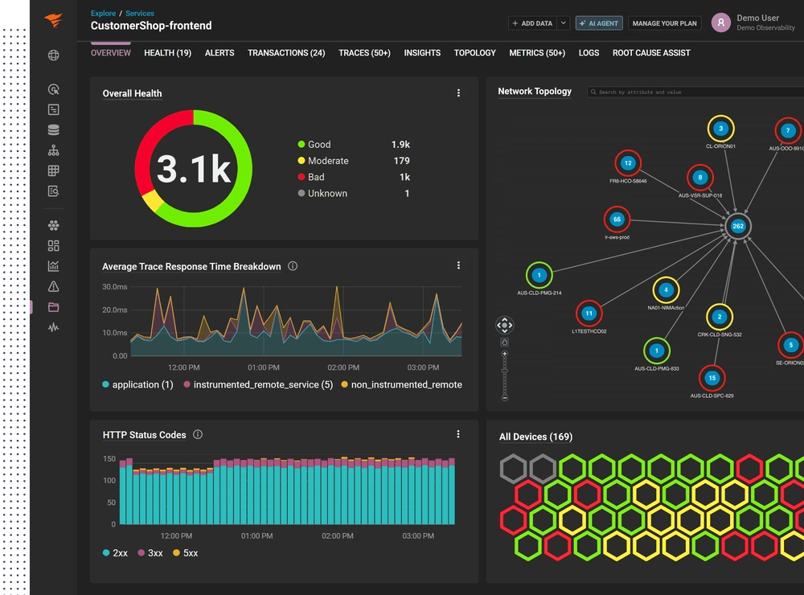
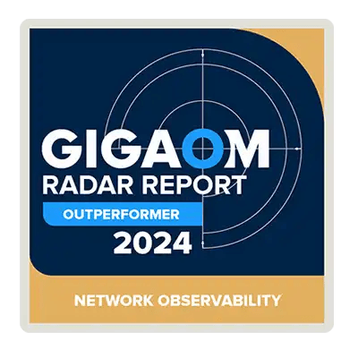

<main id="main-content"><!--&--><!--$--><!--/$--><!--/&--><div class="variant-5cef832e99714c2587fafb81b43166d0"><div class="builder-blocks props-blocks-wrapper-b46bf284"><div class="builder-aaeca1921d3f4bac811a4a6beae35fc1 builder-block a-53874"><section class="builder-5e8ffb11e27245fb9426cd6bbe299166 builder-block"><div class="builder-66341feb2125402f860fe5d6a9a3ecd8 builder-block"><div class="builder-06ce0a5b6ec1458c85f78e2fbf148d79 builder-block"><div class="[&amp;_svg]:fill-[currentColor]"><!-- icon (svg removed for readability) --></div></div><div class="builder-19dab2f042674f3abd527834108d8c5d builder-block"><div class="builder-93dbcdb8d7294be69412acf2601e5498 builder-block"><h1 class="builder-d101c03988e34ef288edbd20bc08097c builder-block"><div class="builder-text">Eliminate downtime <strong>before</strong> it ever starts.
                                                                                                    </div></h1><div class="builder-906e41360f3e4d69a7174cf30c3a95b0 builder-block"><div class="builder-text"><h2>AI-powered observability, resilience, and performance for any IT environment.</h2></div></div></div><a href="https://www.solarwinds.com/interactive-demos" class="group text-button-primary-content bg-button-primary-fill hover:text-button-primary-content-hover hover:bg-button-primary-fill-hover active:text-button-primary-content-pressed active:bg-button-primary-fill-pressed disabled:text-button-primary-content-disabled disabled:bg-button-primary-fill-disabled font-geist rounded-[40px] font-semibold outline-none disabled:cursor-not-allowed focus-visible:shadow-[inset_0_0_0_2.5px_var(--color-button-primary-fill),inset_0_0_0_4.5px_white,inset_0_0_0_6.5px_var(--color-swdc-blue-325)] hover:focus-visible:shadow-[inset_0_0_0_2.5px_var(--color-button-primary-fill-hover),inset_0_0_0_4.5px_white,inset_0_0_0_6.5px_var(--color-swdc-blue-325)] active:focus-visible:shadow-[inset_0_0_0_2.5px_var(--color-button-primary-fill-pressed),inset_0_0_0_4.5px_white,inset_0_0_0_6.5px_var(--color-swdc-blue-325)] py-4.5 px-8 sm:py-5 sm:px-9 text-link-l-mobile sm:text-link-l builder-242420985f1e4074a67fa9fdd9fa1ea6 builder-block"><span class="relative flex items-center justify-center"><span class="flex items-center justify-center">EXPLORE DEMOS</span></span></a></div></div></section><section class="builder-23fd21cbbb5146eca6ea23014dd592ce builder-block"><div class="builder-9d0744946d2c420cb8d114ce60c9ed44 builder-block"><div class="builder-b20f264888b04a07b3d37746742851f3 builder-block"><div class="builder-text"><h2>Trusted by leading companies</h2></div></div><div class="builder-0be09aa9e88245469da86303cfde865f builder-block"></div></div></section></div><div class="builder-dac73bc09273402f90c45a3fa1bba1a1 builder-block b-53874"><section class="builder-1a6d624816164ebaae281746167292db builder-block"><div class="builder-50f75a0eee274328811b0368f35b035f builder-block"><div class="builder-25f05f55be2044c4bbcac68c38ed901c builder-block"><div class="[&amp;_svg]:fill-[currentColor]"><!-- icon (svg removed for readability) --></div></div><div class="builder-22b9701b7fce4f1cbca6f76ccd4c6527 builder-block"><div class="builder-b35754529eba4923a139ef9aca76c6d9 builder-block"><h1 class="builder-58ebce15f311496d9cbaed9a4eba0e17 builder-block"><div class="builder-text">Eliminate downtime <strong>before</strong> it ever starts.
                                                                                                                </div></h1><div class="builder-0fa56bfd5222475aa3d8747f56735956 builder-block"><div class="builder-text"><h2>AI-powered observability, resilience, and performance for any IT environment.</h2></div></div></div><div class="builder-8488cccfeac44ca4b69a13794fd601e9 builder-block"><a href="https://www.solarwinds.com/interactive-demos" class="group text-button-primary-content bg-button-primary-fill hover:text-button-primary-content-hover hover:bg-button-primary-fill-hover active:text-button-primary-content-pressed active:bg-button-primary-fill-pressed disabled:text-button-primary-content-disabled disabled:bg-button-primary-fill-disabled font-geist rounded-[40px] font-semibold outline-none disabled:cursor-not-allowed focus-visible:shadow-[inset_0_0_0_2.5px_var(--color-button-primary-fill),inset_0_0_0_4.5px_white,inset_0_0_0_6.5px_var(--color-swdc-blue-325)] hover:focus-visible:shadow-[inset_0_0_0_2.5px_var(--color-button-primary-fill-hover),inset_0_0_0_4.5px_white,inset_0_0_0_6.5px_var(--color-swdc-blue-325)] active:focus-visible:shadow-[inset_0_0_0_2.5px_var(--color-button-primary-fill-pressed),inset_0_0_0_4.5px_white,inset_0_0_0_6.5px_var(--color-swdc-blue-325)] py-4.5 px-8 sm:py-5 sm:px-9 text-link-l-mobile sm:text-link-l builder-45f9acf77f844b99bd5d713390cbc030 builder-block"><span class="relative flex items-center justify-center"><span class="flex items-center justify-center">EXPLORE DEMOS</span></span></a><a href="https://www.g2.com/products/solarwinds-worldwide-llc-solarwinds-observability/reviews"><div class="flex h-6 flex-row items-center gap-3"><div class="flex h-6 w-6 shrink-0 items-center justify-center rounded-full bg-white shadow-[0_1px_2px_rgba(0,0,0,0.30)]"></div><div class="flex items-center gap-2"><div class="relative inline-block"><!-- icon (svg removed for readability) --><div class="absolute top-0 left-0 w-full overflow-hidden"><!-- icon (svg removed for readability) --></div></div><div class="relative inline-block"><!-- icon (svg removed for readability) --><div class="absolute top-0 left-0 w-full overflow-hidden"><!-- icon (svg removed for readability) --></div></div><div class="relative inline-block"><!-- icon (svg removed for readability) --><div class="absolute top-0 left-0 w-full overflow-hidden"><!-- icon (svg removed for readability) --></div></div><div class="relative inline-block"><!-- icon (svg removed for readability) --><div class="absolute top-0 left-0 w-full overflow-hidden"><!-- icon (svg removed for readability) --></div></div><div class="relative inline-block"><!-- icon (svg removed for readability) --><div class="absolute top-0 left-0 w-1/2 overflow-hidden"><!-- icon (svg removed for readability) --></div></div><div class="flex items-baseline"><span class="text-body-secondary text-body-xs font-bold">4.3</span><span class="text-body-secondary text-body-xs ml-1 font-normal">/ 5 on G2</span></div></div></div></a></div></div></div></section><section class="builder-3aa507aecc38496fa680a93cc0ece565 builder-block"><div class="builder-9180253313a744c8970aded41e8a87dd builder-block"><div class="builder-d147994ad14b46328b55cad440003179 builder-block"><div class="builder-d3d9bac29a1c4bf6bbf2669ed1597cb6 builder-block"><div class="builder-652c499fe38547d8a196c848897d0942 builder-block"><div class="builder-e82597cbc6224f4abfa5384a7d42e058 builder-block"><div class="builder-text"><p class="">TRUSTED BY</p></div></div><div class="builder-6526b3c7d3c548629553b051a233e304 builder-block"><div class="slick-slider slick-vertical slick-initialized"><div class="slick-list"><div class="slick-track"><div class="slick-slide"><div><div><div class="builder-blocks props-blocks-wrapper-b46bf284"><div class="builder-cd3e5162d4ff4c2883df8bd4d6147c92 builder-block"><div class="builder-fefc689623e64c9ea1dc0a373c3f7e06 builder-block"><div class="builder-text"><p class="">450 of the fortune 500</p></div></div></div></div></div></div></div><div class="slick-slide"><div><div><div class="builder-blocks props-blocks-wrapper-b46bf284"><div class="builder-9f8a3cb3615d460dad56f1068d765d78 builder-block"><div class="builder-9b1c12758f694952aeb3d25c685c9777 builder-block"><div class="builder-text"><p class="">190+ countries</p></div></div></div></div></div></div></div><div class="slick-slide slick-active slick-current"><div><div><div class="builder-blocks props-blocks-wrapper-b46bf284"><div class="builder-81d93a96025b407db5e9defb45b7c08d builder-block"><div class="builder-7c81190776ca48148b625ec47cd56457 builder-block"><div class="builder-text"><p class="">300K+ customers</p></div></div></div></div></div></div></div></div></div></div></div></div><div class="builder-fd1cf93cca214fb491fccd41b53bc741 builder-block"><div class="slick-slider slick-vertical slick-initialized"><div class="slick-list"><div class="slick-track"><div class="slick-slide slick-cloned"><div><div><div class="builder-blocks props-blocks-wrapper-b46bf284"><div class="builder-78db043b5efa4e0f8af4a8e698d0cbc1 builder-block"></div></div></div></div></div><div class="slick-slide"><div><div><div class="builder-blocks props-blocks-wrapper-b46bf284"><div class="builder-323e6fdd56474c0591b27d5a9cfdade6 builder-block"></div></div></div></div></div><div class="slick-slide"><div><div><div class="builder-blocks props-blocks-wrapper-b46bf284"><div class="builder-9d978f7d5daa4fcc9e0a162367408b8e builder-block"></div></div></div></div></div><div class="slick-slide slick-active slick-current"><div><div><div class="builder-blocks props-blocks-wrapper-b46bf284"><div class="builder-78db043b5efa4e0f8af4a8e698d0cbc1 builder-block"></div></div></div></div></div><div class="slick-slide slick-cloned"><div><div><div class="builder-blocks props-blocks-wrapper-b46bf284"><div class="builder-323e6fdd56474c0591b27d5a9cfdade6 builder-block"></div></div></div></div></div></div></div></div></div></div></div></div></section></div><div class="builder-1e41ece37c3b42378a7da8a3abec1488 builder-block"><section class="builder-12d9733bed1a4281bad8e0d5c6f75939 builder-block"><div class="builder-beeab975245949608cf5aa889715cb5f builder-block"><div class="builder-bb120fc98f414d74ab5c2e67a838654b builder-block"></div><div class="builder-846bae8967194fb0a68fd7125d8c8245 builder-block"></div></div><div class="builder-b803c255cd774b5982eaf2c84826bf78 builder-block"><div class="builder-0d7ee48204e645bc93ece752e3f677f5 builder-block"><div class="builder-text"><h2>Solve your biggest challenges. <strong>Faster.</strong></h2></div></div><div class="builder-938ec099cb994c228ea38e253fe88027 builder-block"><div class="builder-94e8f15570374c30acb7cb337db977c4 builder-block"><div class="relative block w-full md:hidden"><button class="border-swdc-gray-200 sm:text-subhead-s text-subhead-2xs flex w-full min-w-0 cursor-pointer flex-row-reverse items-center justify-between border border-solid px-4 pt-3.5 pb-4 text-left leading-7 font-medium sm:leading-8 bg-white text-swdc-blue-500 [&amp;_svg]:text-swdc-black-600"><!-- icon (svg removed for readability) --><span class="mr-2 truncate overflow-hidden">Monitoring and Observability</span></button></div><span class="hidden md:block"><ul class="flex flex-wrap items-center gap-x-16 gap-y-4"><li class="group after:border-r-swdc-silver-300 data-focus:outline-swdc-blue-400 relative whitespace-nowrap after:absolute after:top-1/2 after:-right-8 after:h-6 after:-translate-y-1/2 after:border-r-2 last:after:border-r-0 focus:not-data-focus:outline-none data-focus:outline-2 data-focus:-outline-offset-2 md:text-center lg:flex-none lg:text-left text-headline"><div class="text-link-m relative cursor-pointer gap-1 pb-1.5 font-bold text-headline">Monitoring and Observability<div class="bg-swdc-silver-400 absolute right-0 -bottom-1 left-0 h-0 rounded-full group-hover:h-0.5 h-1 group-hover:-bottom-1 group-hover:h-1"></div></div></li><li class="group after:border-r-swdc-silver-300 data-focus:outline-swdc-blue-400 relative whitespace-nowrap after:absolute after:top-1/2 after:-right-8 after:h-6 after:-translate-y-1/2 after:border-r-2 last:after:border-r-0 focus:not-data-focus:outline-none data-focus:outline-2 data-focus:-outline-offset-2 md:text-center lg:flex-none lg:text-left text-link hover:text-link-hover active:text-link-pressed"><div class="text-link-m relative cursor-pointer gap-1 pb-1.5 font-bold text-link hover:text-link-hover active:text-link-pressed">Database<div class="bg-swdc-silver-400 absolute right-0 -bottom-1 left-0 h-0 rounded-full group-hover:h-0.5 mt-0.5"></div></div></li><li class="group after:border-r-swdc-silver-300 data-focus:outline-swdc-blue-400 relative whitespace-nowrap after:absolute after:top-1/2 after:-right-8 after:h-6 after:-translate-y-1/2 after:border-r-2 last:after:border-r-0 focus:not-data-focus:outline-none data-focus:outline-2 data-focus:-outline-offset-2 md:text-center lg:flex-none lg:text-left text-link hover:text-link-hover active:text-link-pressed"><div class="text-link-m relative cursor-pointer gap-1 pb-1.5 font-bold text-link hover:text-link-hover active:text-link-pressed">Incident Response<div class="bg-swdc-silver-400 absolute right-0 -bottom-1 left-0 h-0 rounded-full group-hover:h-0.5 mt-0.5"></div></div></li><li class="group after:border-r-swdc-silver-300 data-focus:outline-swdc-blue-400 relative whitespace-nowrap after:absolute after:top-1/2 after:-right-8 after:h-6 after:-translate-y-1/2 after:border-r-2 last:after:border-r-0 focus:not-data-focus:outline-none data-focus:outline-2 data-focus:-outline-offset-2 md:text-center lg:flex-none lg:text-left text-link hover:text-link-hover active:text-link-pressed"><div class="text-link-m relative cursor-pointer gap-1 pb-1.5 font-bold text-link hover:text-link-hover active:text-link-pressed">IT Service Management<div class="bg-swdc-silver-400 absolute right-0 -bottom-1 left-0 h-0 rounded-full group-hover:h-0.5 mt-0.5"></div></div></li></ul></span></div><div class="builder-97e764e1139d48619039c09dfefef7f8 builder-block"><div class="builder-2027446d1ee04d21bc140804e5553f21 builder-block"><div class="flex flex-col"><div class="sticky top-12 shrink-0 grow"><div class="-mr-8 size-125"><span class="group absolute top-0 left-0 size-1/2 transition-all duration-500 ease-in-out -translate-y-7"><!-- icon (svg removed for readability) --><!-- icon (svg removed for readability) --><i class="absolute z-10 transition-opacity duration-500 ease-in-out pointer-events-none group-hover:opacity-100 top-[80px] left-[120px] opacity-100"><div class="builder-blocks props-blocks-wrapper-b46bf284"></div></i></span><span class="group absolute -top-px left-[244px] size-1/2 transition-all duration-500 ease-in-out"><!-- icon (svg removed for readability) --><!-- icon (svg removed for readability) --><i class="absolute z-10 transition-opacity duration-500 ease-in-out pointer-events-none group-hover:opacity-100 top-[60px] left-[80px] opacity-30"><div class="builder-blocks props-blocks-wrapper-b46bf284"></div></i></span><span class="group absolute top-[186px] -left-px size-1/2 transition-all duration-500 ease-in-out"><!-- icon (svg removed for readability) --><!-- icon (svg removed for readability) --><i class="absolute z-10 transition-opacity duration-500 ease-in-out pointer-events-none group-hover:opacity-100 top-[55px] left-[85px] opacity-30"><div class="builder-blocks props-blocks-wrapper-b46bf284"></div></i></span><span class="group absolute top-[159px] left-[214px] size-1/2 transition-all duration-500 ease-in-out"><!-- icon (svg removed for readability) --><!-- icon (svg removed for readability) --><i class="absolute z-10 transition-opacity duration-500 ease-in-out pointer-events-none group-hover:opacity-100 top-[60px] left-[110px] opacity-30"><div class="builder-blocks props-blocks-wrapper-b46bf284"></div></i></span></div></div><div class="h-52"></div></div></div><div class="builder-22b790c294f34a608250c395b9797a8c builder-block"><div class="relative w-full overflow-hidden"><div class="flex w-full transition-transform duration-300 ease-in-out"><div class="w-full min-w-full shrink-0"><div class="builder-blocks props-blocks-wrapper-b46bf284"><div class="builder-679b1a01eac841e1b4837d119c01cca7 builder-block"><div class="builder-76c39ffa6e5d4356aac04acc46241f1a builder-block"><div class="focus-visible:outline-swdc-blue-400 relative size-full outline-none focus-visible:outline-2"><wistia-player media-id="null" unique-id="null"></wistia-player></div></div><div class="builder-ee9ad88af89d4d4090ff88c4549eff06 builder-block"><div class="builder-62423d2f82db4d11a24f75dd4ac2b85d builder-block"><div class="builder-text"><p>Don’t let technology performance be the barrier to your success. Get better results across your networks, on-prem and cloud infrastructure, applications, databases, user experience, security, and more. Address security, compliance, and operational needs with flexible self-hosted and SaaS deployment options. Be more proactive, make more intelligent decisions, and accelerate issue resolution with AIOps-powered capabilities.</p></div></div><a href="https://www.solarwinds.com/observability" class="group text-button-primary-content bg-button-primary-fill hover:text-button-primary-content-hover hover:bg-button-primary-fill-hover active:text-button-primary-content-pressed active:bg-button-primary-fill-pressed disabled:text-button-primary-content-disabled disabled:bg-button-primary-fill-disabled font-geist rounded-[40px] font-semibold outline-none disabled:cursor-not-allowed focus-visible:shadow-[inset_0_0_0_2.5px_var(--color-button-primary-fill),inset_0_0_0_4.5px_white,inset_0_0_0_6.5px_var(--color-swdc-blue-325)] hover:focus-visible:shadow-[inset_0_0_0_2.5px_var(--color-button-primary-fill-hover),inset_0_0_0_4.5px_white,inset_0_0_0_6.5px_var(--color-swdc-blue-325)] active:focus-visible:shadow-[inset_0_0_0_2.5px_var(--color-button-primary-fill-pressed),inset_0_0_0_4.5px_white,inset_0_0_0_6.5px_var(--color-swdc-blue-325)] py-3.5 px-7.5 sm:py-4 text-link-m-mobile sm:text-link-m builder-12b1be2272264f88b86467e66ff71581 builder-block"><span class="relative flex items-center justify-center"><span class="flex items-center justify-center">Explore Monitoring and Observability</span></span></a></div><div class="builder-13f820c871254fc5bfb614a3f674010a builder-block"><div class="builder-86e7a5fcefe342d08d5757d16407646e builder-block"><div class="builder-text"><h3>Monitoring and Observability capabilities</h3></div></div><div class="builder-1628433c9213497dada0278e67225ce4 builder-block"><div class="builder-ae5cb0501a79410bac9e8017d4af0eb3 builder-block"><a href="https://www.solarwinds.com/observability/network" class="text-button-tertiary-content hover:text-button-tertiary-content-hover active:text-button-tertiary-content-pressed font-geist px-0.5 outline-none hover:underline focus-visible:rounded-sm focus-visible:shadow-[inset_0_0_0_2px_var(--color-swdc-blue-325),0_0_0_2px_white] disabled:no-underline disabled:text-button-tertiary-content-disabled disabled:cursor-not-allowed text-link-m-mobile sm:text-link-m font-semibold builder-f93c09c1d4794547ad0484a04dfbfc04 builder-block"><span class="flex flex-row items-center gap-1"><span class="">Network</span><!-- icon (svg removed for readability) --></span></a></div><div class="builder-7a539912a9de416d904cf3e3a2eb17b0 builder-block"><a href="https://www.solarwinds.com/observability/infrastructure" class="text-button-tertiary-content hover:text-button-tertiary-content-hover active:text-button-tertiary-content-pressed font-geist px-0.5 outline-none hover:underline focus-visible:rounded-sm focus-visible:shadow-[inset_0_0_0_2px_var(--color-swdc-blue-325),0_0_0_2px_white] disabled:no-underline disabled:text-button-tertiary-content-disabled disabled:cursor-not-allowed text-link-m-mobile sm:text-link-m font-semibold builder-7a521b7ad32b49e69f5229ac9801d8e3 builder-block"><span class="flex flex-row items-center gap-1"><span class="">Infrastructure</span><!-- icon (svg removed for readability) --></span></a></div><div class="builder-3f532f3b4062485db4c6591402d180cd builder-block"><a href="https://www.solarwinds.com/database" class="text-button-tertiary-content hover:text-button-tertiary-content-hover active:text-button-tertiary-content-pressed font-geist px-0.5 outline-none hover:underline focus-visible:rounded-sm focus-visible:shadow-[inset_0_0_0_2px_var(--color-swdc-blue-325),0_0_0_2px_white] disabled:no-underline disabled:text-button-tertiary-content-disabled disabled:cursor-not-allowed text-link-m-mobile sm:text-link-m font-semibold builder-cdba5ca1439a42cf996a0faa23835128 builder-block"><span class="flex flex-row items-center gap-1"><span class="">Database</span><!-- icon (svg removed for readability) --></span></a></div><div class="builder-3909b12f1873466996b8b74f504a754c builder-block"><a href="https://www.solarwinds.com/observability/application" class="text-button-tertiary-content hover:text-button-tertiary-content-hover active:text-button-tertiary-content-pressed font-geist px-0.5 outline-none hover:underline focus-visible:rounded-sm focus-visible:shadow-[inset_0_0_0_2px_var(--color-swdc-blue-325),0_0_0_2px_white] disabled:no-underline disabled:text-button-tertiary-content-disabled disabled:cursor-not-allowed text-link-m-mobile sm:text-link-m font-semibold builder-b08679d9314047efafdbf8cde82b6557 builder-block"><span class="flex flex-row items-center gap-1"><span class="">Applications</span><!-- icon (svg removed for readability) --></span></a></div><div class="builder-a73f7089c87249e98fede3df85ef14bb builder-block"><a href="https://www.solarwinds.com/observability/digital-experience-monitoring" class="text-button-tertiary-content hover:text-button-tertiary-content-hover active:text-button-tertiary-content-pressed font-geist px-0.5 outline-none hover:underline focus-visible:rounded-sm focus-visible:shadow-[inset_0_0_0_2px_var(--color-swdc-blue-325),0_0_0_2px_white] disabled:no-underline disabled:text-button-tertiary-content-disabled disabled:cursor-not-allowed text-link-m-mobile sm:text-link-m font-semibold builder-3e4c13a787a54d22b88657f850cd7b07 builder-block"><span class="flex flex-row items-center gap-1"><span class="">Digital Experience</span><!-- icon (svg removed for readability) --></span></a></div><div class="builder-8336ccea03ab47b592e13e20eb1ce211 builder-block"><a href="https://www.solarwinds.com/observability/logs" class="text-button-tertiary-content hover:text-button-tertiary-content-hover active:text-button-tertiary-content-pressed font-geist px-0.5 outline-none hover:underline focus-visible:rounded-sm focus-visible:shadow-[inset_0_0_0_2px_var(--color-swdc-blue-325),0_0_0_2px_white] disabled:no-underline disabled:text-button-tertiary-content-disabled disabled:cursor-not-allowed text-link-m-mobile sm:text-link-m font-semibold builder-0b5df8abbdb0475c8b415916c71a343a builder-block"><span class="flex flex-row items-center gap-1"><span class="">Logs</span><!-- icon (svg removed for readability) --></span></a></div><div class="builder-85cfc70f70ff45c3b2e6233a36f0b1aa builder-block"><a href="https://www.solarwinds.com/observability/security" class="text-button-tertiary-content hover:text-button-tertiary-content-hover active:text-button-tertiary-content-pressed font-geist px-0.5 outline-none hover:underline focus-visible:rounded-sm focus-visible:shadow-[inset_0_0_0_2px_var(--color-swdc-blue-325),0_0_0_2px_white] disabled:no-underline disabled:text-button-tertiary-content-disabled disabled:cursor-not-allowed text-link-m-mobile sm:text-link-m font-semibold builder-0b6867034d8045509e316f37565e2dac builder-block"><span class="flex flex-row items-center gap-1"><span class="">Security</span><!-- icon (svg removed for readability) --></span></a></div></div></div></div></div></div><div class="w-full min-w-full shrink-0"><div class="builder-blocks props-blocks-wrapper-b46bf284"><div class="builder-107ca6d2c73949fba794195b11beb3be builder-block"><div class="builder-dfcd29f6b08843e2b6ae5f59e76d50e1 builder-block"><div class="focus-visible:outline-swdc-blue-400 relative size-full outline-none focus-visible:outline-2"><wistia-player media-id="null" unique-id="null"></wistia-player></div></div><div class="builder-72a7fa3ab25d4b388e125d6b2445bbcf builder-block"><div class="builder-2178cb9ed67a49c590f7f462fa144bc2 builder-block"><div class="builder-text"><p>Keep an eye on, troubleshoot, and fine-tune your databases with total control—anytime, anywhere. We combine deep diagnostics and powerful optimization so you can command your critical databases with ease. Actionable insights quickly identify issues and boost performance across on-premises, cloud, and hybrid environments. With flexible self-hosted or SaaS options, SolarWinds ensures optimal database management for peak performance and seamless operations.</p></div></div><a href="https://www.solarwinds.com/database" class="group text-button-primary-content bg-button-primary-fill hover:text-button-primary-content-hover hover:bg-button-primary-fill-hover active:text-button-primary-content-pressed active:bg-button-primary-fill-pressed disabled:text-button-primary-content-disabled disabled:bg-button-primary-fill-disabled font-geist rounded-[40px] font-semibold outline-none disabled:cursor-not-allowed focus-visible:shadow-[inset_0_0_0_2.5px_var(--color-button-primary-fill),inset_0_0_0_4.5px_white,inset_0_0_0_6.5px_var(--color-swdc-blue-325)] hover:focus-visible:shadow-[inset_0_0_0_2.5px_var(--color-button-primary-fill-hover),inset_0_0_0_4.5px_white,inset_0_0_0_6.5px_var(--color-swdc-blue-325)] active:focus-visible:shadow-[inset_0_0_0_2.5px_var(--color-button-primary-fill-pressed),inset_0_0_0_4.5px_white,inset_0_0_0_6.5px_var(--color-swdc-blue-325)] py-3.5 px-7.5 sm:py-4 text-link-m-mobile sm:text-link-m builder-3e9e76f7f4ba4ccd9401ec8199031fab builder-block"><span class="relative flex items-center justify-center"><span class="flex items-center justify-center">Explore Database</span></span></a></div><div class="builder-aeafa6101bbd4299a62cb55989024c88 builder-block"><div class="builder-9426a460a8414dc5a670c8e515012d32 builder-block"><div class="builder-text"><h3>Database Observability capabilities</h3></div></div><div class="builder-24ce12cdd5b04136a8c39f8ab13cd11f builder-block"><div class="builder-a9fb493beabc4ba4945a5829bab66368 builder-block"><a href="https://www.solarwinds.com/database/monitoring" class="text-button-tertiary-content hover:text-button-tertiary-content-hover active:text-button-tertiary-content-pressed font-geist px-0.5 outline-none hover:underline focus-visible:rounded-sm focus-visible:shadow-[inset_0_0_0_2px_var(--color-swdc-blue-325),0_0_0_2px_white] disabled:no-underline disabled:text-button-tertiary-content-disabled disabled:cursor-not-allowed text-link-m-mobile sm:text-link-m font-semibold builder-bc6227b5277a443bb99393b317a230c0 builder-block"><span class="flex flex-row items-center gap-1"><span class="">Monitor</span><!-- icon (svg removed for readability) --></span></a></div><div class="builder-2d017beb31444180b36dce826da4fec8 builder-block"><a href="https://www.solarwinds.com/database/diagnose" class="text-button-tertiary-content hover:text-button-tertiary-content-hover active:text-button-tertiary-content-pressed font-geist px-0.5 outline-none hover:underline focus-visible:rounded-sm focus-visible:shadow-[inset_0_0_0_2px_var(--color-swdc-blue-325),0_0_0_2px_white] disabled:no-underline disabled:text-button-tertiary-content-disabled disabled:cursor-not-allowed text-link-m-mobile sm:text-link-m font-semibold builder-64d370dbf35744cdb317c38be591ed1e builder-block"><span class="flex flex-row items-center gap-1"><span class="">Diagnose</span><!-- icon (svg removed for readability) --></span></a></div><div class="builder-c66f79929c3740c2a65d24aecc94cd7c builder-block"><a href="https://www.solarwinds.com/database/optimize" class="text-button-tertiary-content hover:text-button-tertiary-content-hover active:text-button-tertiary-content-pressed font-geist px-0.5 outline-none hover:underline focus-visible:rounded-sm focus-visible:shadow-[inset_0_0_0_2px_var(--color-swdc-blue-325),0_0_0_2px_white] disabled:no-underline disabled:text-button-tertiary-content-disabled disabled:cursor-not-allowed text-link-m-mobile sm:text-link-m font-semibold builder-6893dbaea0b142f9add08d28ee61deda builder-block"><span class="flex flex-row items-center gap-1"><span class="">Optimize</span><!-- icon (svg removed for readability) --></span></a></div><div class="builder-5bcd8ec2a6b94d588cfa64f8012f568e builder-block"><a href="https://www.solarwinds.com/database/database-everywhere" class="text-button-tertiary-content hover:text-button-tertiary-content-hover active:text-button-tertiary-content-pressed font-geist px-0.5 outline-none hover:underline focus-visible:rounded-sm focus-visible:shadow-[inset_0_0_0_2px_var(--color-swdc-blue-325),0_0_0_2px_white] disabled:no-underline disabled:text-button-tertiary-content-disabled disabled:cursor-not-allowed text-link-m-mobile sm:text-link-m font-semibold builder-fe4e1c32630c41c18090c798f246d120 builder-block"><span class="flex flex-row items-center gap-1"><span class="">Everywhere</span><!-- icon (svg removed for readability) --></span></a></div></div></div></div></div></div><div class="w-full min-w-full shrink-0"><div class="builder-blocks props-blocks-wrapper-b46bf284"><div class="builder-77b5cb69e4494f93933e73e7a9956773 builder-block"><div class="builder-7ec702e9cdb441e0afa3d40eb692ec6e builder-block"><div class="focus-visible:outline-swdc-blue-400 relative size-full outline-none focus-visible:outline-2"></div></div><div class="builder-94268d2e1bfa4bd8944b5c8d00904758 builder-block"><div class="builder-c759a82b35bb4666b51ecba0ea545698 builder-block"><div class="builder-text"><p>Ensuring the reliability of your most critical systems requires focus, standardized workflows, collaboration, and unified insights to keep systems online. Incident response helps teams respond faster through event correlation, on-call management, and intelligent routing to connect the right people at the right time. Squadcast by SolarWinds helps teams drive operational resilience.</p></div></div><a href="https://www.solarwinds.com/incident-response" class="group text-button-primary-content bg-button-primary-fill hover:text-button-primary-content-hover hover:bg-button-primary-fill-hover active:text-button-primary-content-pressed active:bg-button-primary-fill-pressed disabled:text-button-primary-content-disabled disabled:bg-button-primary-fill-disabled font-geist rounded-[40px] font-semibold outline-none disabled:cursor-not-allowed focus-visible:shadow-[inset_0_0_0_2.5px_var(--color-button-primary-fill),inset_0_0_0_4.5px_white,inset_0_0_0_6.5px_var(--color-swdc-blue-325)] hover:focus-visible:shadow-[inset_0_0_0_2.5px_var(--color-button-primary-fill-hover),inset_0_0_0_4.5px_white,inset_0_0_0_6.5px_var(--color-swdc-blue-325)] active:focus-visible:shadow-[inset_0_0_0_2.5px_var(--color-button-primary-fill-pressed),inset_0_0_0_4.5px_white,inset_0_0_0_6.5px_var(--color-swdc-blue-325)] py-3.5 px-7.5 sm:py-4 text-link-m-mobile sm:text-link-m builder-7d71c0a35f7e46929e645193bc24e5c8 builder-block"><span class="relative flex items-center justify-center"><span class="flex items-center justify-center">Explore Incident Response</span></span></a></div></div></div></div><div class="w-full min-w-full shrink-0"><div class="builder-blocks props-blocks-wrapper-b46bf284"><div class="builder-274d5de63d644d52ac293ba438d20ba0 builder-block"><div class="builder-5f540e1b4f8d4c5bace841c692012d73 builder-block"><div class="focus-visible:outline-swdc-blue-400 relative size-full outline-none focus-visible:outline-2"></div></div><div class="builder-74ef52953f154d21844308b4c4f0ddb9 builder-block"><div class="builder-dd27a21e8fd3435098c0491feb5e7abc builder-block"><div class="builder-text"><p>SolarWinds ITSM brings together everything you need—service management, asset management, CMDB, reporting, and more—with powerful enterprise service management features to help your teams solve problems quickly and effectively. AI-driven automation streamlines workflows and enhances agent accuracy and efficiency, making it your perfect choice for easy-to-use ITSM software built to scale effortlessly, keep employees happy, and ensure operations run smoothly.</p></div></div><a href="https://www.solarwinds.com/itsm" class="group text-button-primary-content bg-button-primary-fill hover:text-button-primary-content-hover hover:bg-button-primary-fill-hover active:text-button-primary-content-pressed active:bg-button-primary-fill-pressed disabled:text-button-primary-content-disabled disabled:bg-button-primary-fill-disabled font-geist rounded-[40px] font-semibold outline-none disabled:cursor-not-allowed focus-visible:shadow-[inset_0_0_0_2.5px_var(--color-button-primary-fill),inset_0_0_0_4.5px_white,inset_0_0_0_6.5px_var(--color-swdc-blue-325)] hover:focus-visible:shadow-[inset_0_0_0_2.5px_var(--color-button-primary-fill-hover),inset_0_0_0_4.5px_white,inset_0_0_0_6.5px_var(--color-swdc-blue-325)] active:focus-visible:shadow-[inset_0_0_0_2.5px_var(--color-button-primary-fill-pressed),inset_0_0_0_4.5px_white,inset_0_0_0_6.5px_var(--color-swdc-blue-325)] py-3.5 px-7.5 sm:py-4 text-link-m-mobile sm:text-link-m builder-7721fca7385c456aa28b30fed6cb26c6 builder-block"><span class="relative flex items-center justify-center"><span class="flex items-center justify-center">Explore IT Service Management</span></span></a></div><div class="builder-16d93031a9344eb481e1d984f124c443 builder-block"><div class="builder-07eb16576c664527b2d7eb0b4b972586 builder-block"><div class="builder-text"><h3>IT Service Management capabilities</h3></div></div><div class="builder-67d2e3b2cdbd4874ad02c3b1437ba2ab builder-block"><div class="builder-6cf0ff2c9d264f3b9d0d13fbb4978576 builder-block"><a href="https://www.solarwinds.com/itsm/service-management" class="text-button-tertiary-content hover:text-button-tertiary-content-hover active:text-button-tertiary-content-pressed font-geist px-0.5 outline-none hover:underline focus-visible:rounded-sm focus-visible:shadow-[inset_0_0_0_2px_var(--color-swdc-blue-325),0_0_0_2px_white] disabled:no-underline disabled:text-button-tertiary-content-disabled disabled:cursor-not-allowed text-link-m-mobile sm:text-link-m font-semibold builder-17695b33566142e5811ae37c5805919f builder-block"><span class="flex flex-row items-center gap-1"><span class="">Service Management</span><!-- icon (svg removed for readability) --></span></a></div><div class="builder-8f781c29794b48e39268521b9ea2cd66 builder-block"><a href="https://www.solarwinds.com/itsm/asset-management" class="text-button-tertiary-content hover:text-button-tertiary-content-hover active:text-button-tertiary-content-pressed font-geist px-0.5 outline-none hover:underline focus-visible:rounded-sm focus-visible:shadow-[inset_0_0_0_2px_var(--color-swdc-blue-325),0_0_0_2px_white] disabled:no-underline disabled:text-button-tertiary-content-disabled disabled:cursor-not-allowed text-link-m-mobile sm:text-link-m font-semibold builder-38623017e90d417c991a46d4c7240b46 builder-block"><span class="flex flex-row items-center gap-1"><span class="">Assets &amp; CMDB</span><!-- icon (svg removed for readability) --></span></a></div><div class="builder-831bdc17f1b64883b474cefcc24d8157 builder-block"><a href="https://www.solarwinds.com/itsm/ai-and-automation" class="text-button-tertiary-content hover:text-button-tertiary-content-hover active:text-button-tertiary-content-pressed font-geist px-0.5 outline-none hover:underline focus-visible:rounded-sm focus-visible:shadow-[inset_0_0_0_2px_var(--color-swdc-blue-325),0_0_0_2px_white] disabled:no-underline disabled:text-button-tertiary-content-disabled disabled:cursor-not-allowed text-link-m-mobile sm:text-link-m font-semibold builder-b00856f64c714247b34f1ea26a04c78e builder-block"><span class="flex flex-row items-center gap-1"><span class="">AI &amp; Automation</span><!-- icon (svg removed for readability) --></span></a></div><div class="builder-4f960c996e354671a55551fdc1463fc1 builder-block"><a href="https://www.solarwinds.com/itsm/esm" class="text-button-tertiary-content hover:text-button-tertiary-content-hover active:text-button-tertiary-content-pressed font-geist px-0.5 outline-none hover:underline focus-visible:rounded-sm focus-visible:shadow-[inset_0_0_0_2px_var(--color-swdc-blue-325),0_0_0_2px_white] disabled:no-underline disabled:text-button-tertiary-content-disabled disabled:cursor-not-allowed text-link-m-mobile sm:text-link-m font-semibold builder-a93f787d428b4f5c8b132005d74e005e builder-block"><span class="flex flex-row items-center gap-1"><span class="">Enterprise Service Management</span><!-- icon (svg removed for readability) --></span></a></div></div></div></div></div></div></div></div></div></div></div></div><div class="builder-3d815fe7d3e043089d279aa894eccd0b builder-block"><div class="[&amp;_svg]:fill-[currentColor]"><!-- icon (svg removed for readability) --></div></div></section><section class="builder-c61cb09d9e344c588de162c4e9a3e93b builder-block"><div class="builder-77284eb252b64dafafeb1c45c3e3a87d builder-block"><div class="builder-4b9d674bb33e479abc42ac9bd98d98e3 builder-block"><div class="builder-ea9860da033e460a89d0b0b937a80d2d builder-block"><div class="builder-text"><h2>We’re here to help you.</h2></div></div><a href="https://www.solarwinds.com/company/contact-us" class="group font-geist text-button-secondary-content outline-button-secondary-outline hover:text-button-secondary-content-hover hover:outline-button-secondary-outline-hover active:text-button-secondary-content-pressed active:outline-button-secondary-outline-pressed disabled:text-button-secondary-content-disabled disabled:outline-button-secondary-outline-disabled rounded-[40px] font-semibold outline-solid disabled:cursor-not-allowed focus-visible:shadow-[inset_0_0_0_2.5px_var(--color-button-secondary-outline),inset_0_0_0_4.5px_white,inset_0_0_0_6.5px_var(--color-swdc-blue-325)] hover:focus-visible:shadow-[inset_0_0_0_2.5px_var(--color-button-secondary-outline-hover),inset_0_0_0_4.5px_white,inset_0_0_0_6.5px_var(--color-swdc-blue-325)] active:focus-visible:shadow-[inset_0_0_0_2.5px_var(--color-button-secondary-outline-pressed),inset_0_0_0_4.5px_white,inset_0_0_0_6.5px_var(--color-swdc-blue-325)] py-3.5 px-6.5 text-link-s outline-2 -outline-offset-2 builder-9a71c245d2b84d3d8ed46a9c7c81e525 builder-block"><span class="relative flex items-center justify-center"><span class="flex items-center justify-center">Get Expert Guidance</span></span></a></div><div class="builder-0a607837a1a7410cab8888e591a0f3c7 builder-block"></div></div></section><section class="builder-cb406aab14a64cb6bccbf9d322efe7d2 builder-block"><div class="builder-32b781c816464effb68db024ad341984 builder-block"><div class="builder-6437648c17d7464cacaefbecc4c08d79 builder-block"><div class="[&amp;_svg]:fill-[currentColor]"><!-- icon (svg removed for readability) --></div></div><div class="builder-deeb6d31d4cd4d8aa0ccbf9c9163828b builder-block"><div class="builder-6eb1c1e2090d4817b814e22d086040b2 builder-block"><div class="builder-text"><h2><span>Navigating IT's Future in the Era of AI</span></h2></div></div><div class="builder-427aab20932e4a09951b2ffa6454341f builder-block"><div class="builder-text"><p>Your service desk sidekick</p></div></div></div><div class="builder-9b28609700da4bc092222fbdac13ad8e builder-block"><div class="builder-0e539bc39f9440efa8b9c7d3ea57e375 builder-block"><div class="builder-e6645d60fd4d4547a07085e3d93c7896 builder-block"><div class="builder-b7f0fa9f91604d9d8791006be41a3aa1 builder-block"><div class="builder-text"><h3>Agentic AI by Design: A New Approach</h3></div></div><div class="builder-9908817741294b04ac0bda4e6af85c97 builder-block"><div class="builder-8ed23a013fb14716b7a67efb2d12088e builder-block"><div class="builder-text"><p>Take a closer look at our agentic AI designed with safety, transparency, and human partnership at the core.</p></div></div></div><a href="https://www.solarwinds.com/blog/agentic-ai-by-design-the-next-chapter-of-responsible-ai" class="group font-geist text-button-secondary-content outline-button-secondary-outline hover:text-button-secondary-content-hover hover:outline-button-secondary-outline-hover active:text-button-secondary-content-pressed active:outline-button-secondary-outline-pressed disabled:text-button-secondary-content-disabled disabled:outline-button-secondary-outline-disabled rounded-[40px] font-semibold outline-solid disabled:cursor-not-allowed focus-visible:shadow-[inset_0_0_0_2.5px_var(--color-button-secondary-outline),inset_0_0_0_4.5px_white,inset_0_0_0_6.5px_var(--color-swdc-blue-325)] hover:focus-visible:shadow-[inset_0_0_0_2.5px_var(--color-button-secondary-outline-hover),inset_0_0_0_4.5px_white,inset_0_0_0_6.5px_var(--color-swdc-blue-325)] active:focus-visible:shadow-[inset_0_0_0_2.5px_var(--color-button-secondary-outline-pressed),inset_0_0_0_4.5px_white,inset_0_0_0_6.5px_var(--color-swdc-blue-325)] py-3.5 px-7.5 sm:py-4 text-link-m-mobile sm:text-link-m outline-3 -outline-offset-3 builder-9e1fcda8d54a4166b3e1a22d699fe766 builder-block"><span class="relative flex items-center justify-center"><span class="flex items-center justify-center">Learn More</span></span></a></div><div class="builder-8ced2d6eee364e8386e31952c62bbd7c builder-block"><div class="builder-508c356c35f340f28465c2b57190e99c builder-block"><div class="builder-text"><h3>What's New in the SolarWinds Platform</h3></div></div><div class="builder-38e74c643be149c8971323fe53feedad builder-block"><div class="builder-ec9ec0769fa945dc91912cebe26f12f6 builder-block"><div class="builder-text"><p>Learn about our latest AI capabilities and access new resources to improve your IT operations.</p></div></div></div><a href="https://www.solarwinds.com/solarwinds-platform/whats-new" class="group font-geist text-button-secondary-content outline-button-secondary-outline hover:text-button-secondary-content-hover hover:outline-button-secondary-outline-hover active:text-button-secondary-content-pressed active:outline-button-secondary-outline-pressed disabled:text-button-secondary-content-disabled disabled:outline-button-secondary-outline-disabled rounded-[40px] font-semibold outline-solid disabled:cursor-not-allowed focus-visible:shadow-[inset_0_0_0_2.5px_var(--color-button-secondary-outline),inset_0_0_0_4.5px_white,inset_0_0_0_6.5px_var(--color-swdc-blue-325)] hover:focus-visible:shadow-[inset_0_0_0_2.5px_var(--color-button-secondary-outline-hover),inset_0_0_0_4.5px_white,inset_0_0_0_6.5px_var(--color-swdc-blue-325)] active:focus-visible:shadow-[inset_0_0_0_2.5px_var(--color-button-secondary-outline-pressed),inset_0_0_0_4.5px_white,inset_0_0_0_6.5px_var(--color-swdc-blue-325)] py-3.5 px-7.5 sm:py-4 text-link-m-mobile sm:text-link-m outline-3 -outline-offset-3 builder-0a15ec44e7714a6bbc307ac3416b9b85 builder-block"><span class="relative flex items-center justify-center"><span class="flex items-center justify-center">Explore Now</span></span></a></div><div class="builder-30393c2a5cfb44db8eba379f60d7e799 builder-block"><div class="builder-98051acf38eb4648bfba7767139c41c4 builder-block"><div class="builder-text"><h3>The SolarWinds Guide to AI-Powered IT</h3></div></div><div class="builder-85c3b0c2611546fb9256ac9f734b76ab builder-block"><div class="builder-662de1987ad94ca9965f36a5d04f0b78 builder-block"><div class="builder-text"><p>Develop your AI strategy with helpful resources, including blogs and e-books.</p></div></div></div><a href="https://www.solarwinds.com/ai" class="group font-geist text-button-secondary-content outline-button-secondary-outline hover:text-button-secondary-content-hover hover:outline-button-secondary-outline-hover active:text-button-secondary-content-pressed active:outline-button-secondary-outline-pressed disabled:text-button-secondary-content-disabled disabled:outline-button-secondary-outline-disabled rounded-[40px] font-semibold outline-solid disabled:cursor-not-allowed focus-visible:shadow-[inset_0_0_0_2.5px_var(--color-button-secondary-outline),inset_0_0_0_4.5px_white,inset_0_0_0_6.5px_var(--color-swdc-blue-325)] hover:focus-visible:shadow-[inset_0_0_0_2.5px_var(--color-button-secondary-outline-hover),inset_0_0_0_4.5px_white,inset_0_0_0_6.5px_var(--color-swdc-blue-325)] active:focus-visible:shadow-[inset_0_0_0_2.5px_var(--color-button-secondary-outline-pressed),inset_0_0_0_4.5px_white,inset_0_0_0_6.5px_var(--color-swdc-blue-325)] py-3.5 px-7.5 sm:py-4 text-link-m-mobile sm:text-link-m outline-3 -outline-offset-3 builder-263786344d9c4d9dbd3841f67c3d4e3d builder-block"><span class="relative flex items-center justify-center"><span class="flex items-center justify-center">Explore Now</span></span></a></div></div></div><button class="text-button-tertiary-content hover:text-button-tertiary-content-hover active:text-button-tertiary-content-pressed font-geist px-0.5 outline-none hover:underline focus-visible:rounded-sm focus-visible:shadow-[inset_0_0_0_2px_var(--color-swdc-blue-325),0_0_0_2px_white] disabled:no-underline disabled:text-button-tertiary-content-disabled disabled:cursor-not-allowed text-link-m-mobile sm:text-link-m font-semibold builder-a0a0d962ca584574b3876b67f81f6ff9 builder-block"><span class="flex flex-row items-center gap-1"><span class="">View All Solutions</span><!-- icon (svg removed for readability) --></span></button></div></section></div><div class="builder-78ee578aa2f74059b3d7e7afa9839b67 builder-block a-53874"><section class="builder-01046a9d32dc4f4281fe5a4800283564 builder-block"><div class="builder-48dec7831cf04c05b03d142f3358b47a builder-block"><div class="[&amp;_svg]:fill-[currentColor]"><!-- icon (svg removed for readability) --></div></div><div class="builder-312b622561244ae8b3a19c7341a502a4 builder-block"><div class="builder-776014485eaf4e46892a75b9d6c865ce builder-block"><div class="[&amp;_svg]:fill-[currentColor]"><!-- icon (svg removed for readability) --></div></div><div class="builder-8d0432d0d19344e09942c97bc9be3b10 builder-block"><div class="builder-e90ffb7b51c043bc8082f3451ab6d682 builder-block"><div class="builder-text"><h2>The highest compliment is<strong></strong><span>our customers' trust.</span></h2></div></div><section class="builder-dbd3271aa0a64dda81d871bbb526ac44 builder-block"><div class="builder-e65d58012c3843438d2983db5424e25e builder-block"><div class="builder-8a2dba6149fb44f88b8f41c1113862a3 builder-block"></div><div class="builder-283795a2316545a18cc24a4c716a99b5 builder-block"><div class="builder-bcc3143941154248a650d353ed29c699 builder-block"><div class="[&amp;_svg]:fill-[currentColor]"><!-- icon (svg removed for readability) --></div></div><div class="builder-86ff5ca5609b4d35b10f7f7f77908d1f builder-block"><div class="slick-slider slick-initialized"><div class="slick-list"><div class="slick-track"><div class="slick-slide slick-active slick-current"><div><div><div class="builder-blocks props-blocks-wrapper-b46bf284"><div class="builder-2cc3d65c49ac451689b4be58a25ed88e builder-block"><div class="builder-eb04c3198b2c446aadf6c5e260200bff builder-block"><div class="builder-text"><p>“SolarWinds was the right choice for Corevist for the simple reason that they ‘get it.’ Not only did they have the right tools, knowledge, and expertise, but they listened. They evolved and grew with us.”</p></div></div><a href="https://www.solarwinds.com/resources/case-study/corevist-case-study/delivery" class="text-button-tertiary-content hover:text-button-tertiary-content-hover active:text-button-tertiary-content-pressed font-geist px-0.5 outline-none hover:underline focus-visible:rounded-sm focus-visible:shadow-[inset_0_0_0_2px_var(--color-swdc-blue-325),0_0_0_2px_white] disabled:no-underline disabled:text-button-tertiary-content-disabled disabled:cursor-not-allowed text-link-m-mobile sm:text-link-m font-semibold builder-fded4c0e1cd848a196f34c010d7061be builder-block"><span class="flex flex-row items-center gap-1"><span class="">Read the Case Study</span><!-- icon (svg removed for readability) --></span></a><div class="builder-09b26238bbc94092966e7409f8832ff6 builder-block"><div class="builder-a841998e89304f3ab8ed3a9d25a3a062 builder-block"><div class="builder-0fa9c81b44a344eb8ffea60b4da98a12 builder-block"><div class="builder-text"><p>Justin Diana</p></div></div><div class="builder-a9ec59ab73164081b23c51d4c0b66417 builder-block"><div class="builder-text"><p>Vice President of Engineering</p></div></div><div class="builder-72eddb45b60b4326ad6e5555aa9141ba builder-block"><div class="builder-text"><p>Corevist</p></div></div></div></div></div></div></div></div></div><div class="slick-slide"><div><div><div class="builder-blocks props-blocks-wrapper-b46bf284"><div class="builder-db66f80eb1934ce3a8c37b7b125d7a10 builder-block"><div class="builder-0a2737cdb22540728c24b084271697e4 builder-block"><div class="builder-text"><p>“We evaluated a handful of popular products, but in the end chose SolarWinds because of its ease of initial setup and discovery, and the broad support it offers, across many leading vendors. Cleaner, clearer, simple!”</p></div></div><a href="https://app.userevidence.com/assets/6827XZJY" class="text-button-tertiary-content hover:text-button-tertiary-content-hover active:text-button-tertiary-content-pressed font-geist px-0.5 outline-none hover:underline focus-visible:rounded-sm focus-visible:shadow-[inset_0_0_0_2px_var(--color-swdc-blue-325),0_0_0_2px_white] disabled:no-underline disabled:text-button-tertiary-content-disabled disabled:cursor-not-allowed text-link-m-mobile sm:text-link-m font-semibold builder-46eb55d3b09246159a16813ac4a718f8 builder-block"><span class="flex flex-row items-center gap-1"><span class="">Read the Review</span><!-- icon (svg removed for readability) --></span></a><div class="builder-3d10dff899f0419bae59960784a3025c builder-block"><div class="builder-3feeb80985ea440f9999da0d802faa55 builder-block"><div class="builder-b11495bf69fa4927a8f518796a68284b builder-block"><div class="builder-text"><p><strong>Jez Marsh</strong></p></div></div><div class="builder-a80f659911fc43209a40c26555b6d6a5 builder-block"><div class="builder-text"><p>Founder &amp; Principal Consultant</p></div></div><div class="builder-90ceb9424994496ca8f9e8ff631173c8 builder-block"><div class="builder-text"><p>Silverback Systems</p></div></div></div></div></div></div></div></div></div><div class="slick-slide"><div><div><div class="builder-blocks props-blocks-wrapper-b46bf284"><div class="builder-cbc1877fdec34538bf30636716ade8b0 builder-block"><div class="builder-ae9b9f2f9523439684d3fa19755fe6f3 builder-block"><div class="builder-text"><p>“The complete comprehensive infra monitoring with enterprise-grade observability suite, the capability SolarWinds has, I don’t think some other vendors will have those capabilities.”</p></div></div><a href="https://www.solarwinds.com/resources/case-study/pinelabs-case-study/delivery" class="text-button-tertiary-content hover:text-button-tertiary-content-hover active:text-button-tertiary-content-pressed font-geist px-0.5 outline-none hover:underline focus-visible:rounded-sm focus-visible:shadow-[inset_0_0_0_2px_var(--color-swdc-blue-325),0_0_0_2px_white] disabled:no-underline disabled:text-button-tertiary-content-disabled disabled:cursor-not-allowed text-link-m-mobile sm:text-link-m font-semibold builder-808a15cb94a24d4294977abfd61d9150 builder-block"><span class="flex flex-row items-center gap-1"><span class="">Read the Case Study</span><!-- icon (svg removed for readability) --></span></a><div class="builder-8f7dbb12aec74e70b9edb42726d428fa builder-block"><div class="builder-db98bb2dc10f4a4093ff6c0048d7a83e builder-block"><div class="builder-093e21e439654e8992c0fc0e31bb05cb builder-block"><div class="builder-text"><p><strong>Somil Goyal</strong></p></div></div><div class="builder-bee933dc758441ddabbbb9dc828a0c3e builder-block"><div class="builder-text"><p>Infrastructure Architect</p></div></div><div class="builder-1814c69654614d9196ddb3c3fa34bdbe builder-block"><div class="builder-text"><p>Pine Labs</p></div></div></div></div></div></div></div></div></div><div class="slick-slide"><div><div><div class="builder-blocks props-blocks-wrapper-b46bf284"><div class="builder-3b4c762a4141434580ec67e6f340a377 builder-block"><div class="builder-f7462c09d4c3414890e5ffb453930517 builder-block"><div class="builder-text"><p>"SolarWinds is the right choice for our business because it provides a unified, high-visibility platform that supports both current operations and future development. Its ability to scale with our environment while offering valuable insights for stakeholders, partners, and leadership makes it an essential tool in our ecosystem."</p></div></div><a href="https://app.userevidence.com/assets/7048AKTN" class="text-button-tertiary-content hover:text-button-tertiary-content-hover active:text-button-tertiary-content-pressed font-geist px-0.5 outline-none hover:underline focus-visible:rounded-sm focus-visible:shadow-[inset_0_0_0_2px_var(--color-swdc-blue-325),0_0_0_2px_white] disabled:no-underline disabled:text-button-tertiary-content-disabled disabled:cursor-not-allowed text-link-m-mobile sm:text-link-m font-semibold builder-c3155d2d74174bd0b0318bb61a76dcdf builder-block"><span class="flex flex-row items-center gap-1"><span class="">Read the Case Study</span><!-- icon (svg removed for readability) --></span></a><div class="builder-0bb076451b034f61912e19903260bde0 builder-block"><div class="builder-9a83724d5a20420caf148930e13ae6d8 builder-block"><div class="builder-4845c6c1f538453c83dbc8e24b407b1b builder-block"><div class="builder-text"><p><strong>Cedric Reed</strong></p></div></div><div class="builder-16b2ce372715403782e8af1f2bb5b6f8 builder-block"><div class="builder-text"><p>Hartsfield-Jackson Atlanta</p></div></div><div class="builder-dd03b6702ea04ae390e0ae953b0a3ef5 builder-block"><div class="builder-text"><p>International Airport</p></div></div></div></div></div></div></div></div></div></div></div></div></div><div class="builder-7fa1431701ad41f98322ca700608117b builder-block"><div class="flex flex-wrap gap-x-6"><button class="text-arrow hover:text-arrow-hover active:text-arrow-pressed disabled:text-arrow-disabled shrink-0 disabled:cursor-not-allowed"><!-- icon (svg removed for readability) --></button><div class="flex min-w-0 flex-1 items-center gap-x-1 overflow-hidden"><button class="w-[49px] min-w-1 shrink max-[400px]:w-[30px] bg-slider-pagination-active h-[6px] hover:bg-slider-pagination-active hover:h-[6px]"></button><button class="w-[49px] min-w-1 shrink max-[400px]:w-[30px] bg-slider-pagination h-[2px] hover:bg-slider-pagination-active hover:h-[6px]"></button><button class="w-[49px] min-w-1 shrink max-[400px]:w-[30px] bg-slider-pagination h-[2px] hover:bg-slider-pagination-active hover:h-[6px]"></button><button class="w-[49px] min-w-1 shrink max-[400px]:w-[30px] bg-slider-pagination h-[2px] hover:bg-slider-pagination-active hover:h-[6px]"></button></div><button class="text-arrow hover:text-arrow-hover active:text-arrow-pressed disabled:text-arrow-disabled shrink-0 disabled:cursor-not-allowed"><!-- icon (svg removed for readability) --></button></div></div></div><div class="builder-a8c882f264f14c69a06b99ae4f42aec0 builder-block"><div class="builder-b757b551e51e4586a2f79b21acdf0611 builder-block"><div class="builder-27b59936fc054d219af2f21979bffb6e builder-block"><div class="slick-slider slick-initialized"><div class="slick-list"><div class="slick-track"><div class="slick-slide slick-active slick-current"><div><div><div class="builder-blocks props-blocks-wrapper-b46bf284"><div class="builder-552ad9c270af4cd18461613964e27cdf builder-block"></div></div></div></div></div><div class="slick-slide"><div><div><div class="builder-blocks props-blocks-wrapper-b46bf284"><div class="builder-5e06f59317d4406aba8934682aea60fb builder-block"></div></div></div></div></div><div class="slick-slide"><div><div><div class="builder-blocks props-blocks-wrapper-b46bf284"><div class="builder-62822202986a48a595b6b42fd0fa277c builder-block"></div></div></div></div></div><div class="slick-slide"><div><div><div class="builder-blocks props-blocks-wrapper-b46bf284"><div class="builder-98c817b418b64ba098d9409cd93dc163 builder-block"></div></div></div></div></div></div></div></div></div></div></div></div></section></div></div></section><section class="builder-11494af395b74565b682f095dd7dc4ad builder-block"><div class="builder-4314ede369eb42ce927f8a70b4645cd5 builder-block"><div class="builder-a89329f964c64024a0abec96a44e4b2e builder-block"><div class="builder-71bacaf1fde64484ab026ba0b3bede61 builder-block"><div class="builder-cea85b2acb114da4a0f15f45d16f163e builder-block"><div class="builder-text">84%</div></div></div><div class="builder-a17c87c545544c82afa3852662e4643b builder-block"><div class="builder-8f522c879d394ad892b350b2e553046f builder-block"><div class="builder-text"><p>of Fortune</p><p>500<sup>®</sup> companies use SolarWinds</p></div></div></div></div><div class="builder-eeb6767cf8ac4907899156bc7ff4d3c7 builder-block"><div class="builder-e81098569b3f4f8a9e8c75f33588c0e9 builder-block"><div class="builder-91635866c30d48f7a366a8971fb64c2e builder-block"><div class="builder-text">20</div></div></div><div class="builder-0e147b90af8a4a279894ea8191ec509d builder-block"><div class="builder-f266c22148d34fb08bc7e604680a12d8 builder-block"><div class="builder-text"><p>Awards received in 2025</p></div></div></div></div><div class="builder-8d041ee3511242fa87086bce12bd8684 builder-block"><div class="builder-cb9ae415e1b34c9997a9c194fd04a0d9 builder-block"><div class="builder-2cc8c46e9a064530b9b0d6cc0c93f180 builder-block"><div class="builder-text">300K+<div></div></div></div></div><div class="builder-bae8522839234abe9eace3ca8a2b73a2 builder-block"><div class="builder-5371523fb6514073acdab97ef72f6fcd builder-block"><div class="builder-text"><p>SolarWinds customers worldwide</p></div></div></div></div></div></section><div class="builder-985226446bcd44af9653024d75fc2305 builder-block builder-symbol"><div class="variant-f4acfc89996346ca9d92ee78ddeb6663"><div class="builder-blocks props-blocks-wrapper-b46bf284"><section class="builder-69539e951525462794cee442e22436ab builder-block"><div class="builder-9edbe78271fb41c0b9267b87a7f33274 builder-block"><div class="builder-columns builder-9edbe78271fb41c0b9267b87a7f33274-breakpoints div-0369db37"><div class="builder-column"><div class="builder-blocks props-blocks-wrapper-b46bf284"><div class="builder-403d0e63a7d847799790f5e6a709ebf9 builder-block"><div class="builder-7d53d2d413aa4abba0fea5936ce06e15 builder-block"><div class="builder-text"><p>Awarded for <strong>excellence</strong> since 1999</p></div></div></div></div></div><div class="builder-column"><div class="builder-blocks props-blocks-wrapper-b46bf284"><div class="builder-46d3f3b5e433482cb722999e5933b7fe builder-block"><div class="builder-92be7dfbd1154639b065a9f583aa02c6 builder-block"><div class="builder-50ae28a580384d319ac9a7280a205e4e builder-block"></div></div><div class="builder-00755e9843744a7d9438040999ba9e94 builder-block"><div class="builder-dd7accbb51df4e5e8c8316ce2c745372 builder-block"></div></div><div class="builder-229e38716422426bad4bbc5146429694 builder-block"><div class="builder-acf125eacf0a4bfc8741e8b09995ffaa builder-block"></div></div><div class="builder-2a881955a66a4099bbca3a3f708e511d builder-block"><div class="builder-4fa7eda593044ad9b01a91d23ae0a854 builder-block"></div></div><div class="builder-127ca2e4fc324176909cd8fa90ad52b5 builder-block"><div class="builder-c975577cf9504efd98e712a0dbed5a57 builder-block"></div></div><div class="builder-4c2f9d9e1feb4f3fb5b8b179f53f4df5 builder-block"><div class="builder-bdce5e4dfc6142b4b8fc54c46d36fd0c builder-block"></div></div></div></div></div></div></div></section></div></div></div><section class="builder-9f6ff11230044ad591518e5d74567018 builder-block"><div class="builder-4a2e33525b944406b048b0044df87c0b builder-block"><div class="builder-d8f426a8e5b04a61a320ccb11792acf7 builder-block"><a href="https://events.solarwinds.com/solarwindsday/" class="builder-b0b420aab28c41eb888454017eabbfcf builder-block resources-grid-item"><div class="builder-7a0e93c23e384390aaeb23fd8d5b6786 builder-block"><div class="builder-4f0b217865ee44dbb2be5c9ec361f221 builder-block"><div class="builder-text"><p>VIRTUAL EVENT</p></div></div><div class="builder-e96bcf95854d4ca3924092afd7589e76 builder-block resources-grid-item-text"><div class="builder-text"><p class="">Introducing goal-oriented AI.</p></div></div></div></a><a href="https://www.solarwinds.com/campaign/saphana" class="builder-d352722ab3eb4f75b43ce1de843f4c3e builder-block resources-grid-item"><div class="builder-a3f1a4b2560248409fcb0d7e3610a0d9 builder-block"><div class="builder-f6d22dfe8ca94340b2ba47e43c888fa6 builder-block"><div class="builder-text"><p class="">Overview</p></div></div><div class="builder-9aed9a154b824e098f633c225da0a13f builder-block resources-grid-item-text"><div class="builder-text"><p>Keep SAP running at business speed.</p></div></div></div></a><a href="https://www.solarwinds.com/resources/report/state-of-itsm-2026" class="builder-09049abf42e34e63a0032d1a107f8f1d builder-block resources-grid-item"><div class="builder-2688b08fccac47c68f611bea3c0c5a44 builder-block"><div class="builder-11e5ac5bf3364143b192152fcd723b89 builder-block"><div class="builder-text"><p>Report</p></div></div><div class="builder-88eca3b61ae14e2da315a5b0d3dd118f builder-block resources-grid-item-text"><div class="builder-text"><p>2026 State of ITSM Report</p></div></div></div></a><a href="https://www.solarwinds.com/events/solarwinds-world-tour" class="builder-2851321baff54254a7aa265cad975b2d builder-block resources-grid-item"><div class="builder-b3779c6a568b4e47896c5719b500b4d7 builder-block"><div class="builder-559685cce7e74e75bb6d4f66bc87d9f5 builder-block"><div class="builder-text"><p>Event</p></div></div><div class="builder-c445a3944962445cbc9484af08d772a2 builder-block resources-grid-item-text"><div class="builder-text"><p>SolarWinds World Tour 2026</p></div></div></div></a><a href="https://www.solarwinds.com/company/newsroom/press-releases/solarwinds-recognized-in-2026-gartner-magic-quadrant-for-observability-platforms" class="builder-1956c47551f24d129d777c368bce7771 builder-block resources-grid-item"><div class="builder-d11a26b82c814c94a9992d08f71dc908 builder-block"><div class="builder-8c1061679ddd4c008832af205dcd1ef5 builder-block"><div class="builder-text"><p>RECOGNITION</p></div></div><div class="builder-f7f8b4a73b314a1297b2880a218ba87d builder-block resources-grid-item-text"><div class="builder-text"><p>SolarWinds in 2026 Gartner® Magic Quadrant™ for Observability Platforms.</p></div></div></div></a></div><a href="https://www.solarwinds.com/resources" class="group font-geist text-button-secondary-content outline-button-secondary-outline hover:text-button-secondary-content-hover hover:outline-button-secondary-outline-hover active:text-button-secondary-content-pressed active:outline-button-secondary-outline-pressed disabled:text-button-secondary-content-disabled disabled:outline-button-secondary-outline-disabled rounded-[40px] font-semibold outline-solid disabled:cursor-not-allowed focus-visible:shadow-[inset_0_0_0_2.5px_var(--color-button-secondary-outline),inset_0_0_0_4.5px_white,inset_0_0_0_6.5px_var(--color-swdc-blue-325)] hover:focus-visible:shadow-[inset_0_0_0_2.5px_var(--color-button-secondary-outline-hover),inset_0_0_0_4.5px_white,inset_0_0_0_6.5px_var(--color-swdc-blue-325)] active:focus-visible:shadow-[inset_0_0_0_2.5px_var(--color-button-secondary-outline-pressed),inset_0_0_0_4.5px_white,inset_0_0_0_6.5px_var(--color-swdc-blue-325)] py-3.5 px-7.5 sm:py-4 text-link-m-mobile sm:text-link-m outline-3 -outline-offset-3 builder-2adb95ecd59f402b912f4cdc1834fe76 builder-block"><span class="relative flex items-center justify-center"><span class="flex items-center justify-center">View All Resources</span></span></a><a href="https://www.solarwinds.com/resources" class="group font-geist text-button-secondary-content outline-button-secondary-outline hover:text-button-secondary-content-hover hover:outline-button-secondary-outline-hover active:text-button-secondary-content-pressed active:outline-button-secondary-outline-pressed disabled:text-button-secondary-content-disabled disabled:outline-button-secondary-outline-disabled rounded-[40px] font-semibold outline-solid disabled:cursor-not-allowed focus-visible:shadow-[inset_0_0_0_2.5px_var(--color-button-secondary-outline),inset_0_0_0_4.5px_white,inset_0_0_0_6.5px_var(--color-swdc-blue-325)] hover:focus-visible:shadow-[inset_0_0_0_2.5px_var(--color-button-secondary-outline-hover),inset_0_0_0_4.5px_white,inset_0_0_0_6.5px_var(--color-swdc-blue-325)] active:focus-visible:shadow-[inset_0_0_0_2.5px_var(--color-button-secondary-outline-pressed),inset_0_0_0_4.5px_white,inset_0_0_0_6.5px_var(--color-swdc-blue-325)] py-3.5 px-6.5 text-link-s outline-2 -outline-offset-2 builder-12b34301a8a949aba5df8f6fb81018a5 builder-block"><span class="relative flex items-center justify-center"><span class="flex items-center justify-center">View All Resources</span></span></a><div class="builder-4af2e8b10e35430193f83dbfd0467cfd builder-block"><div class="builder-custom-code"></div></div></div></section><div class="builder-62fdbf2102d2461f8c255741e5875fab builder-block"><div class="builder-custom-code"></div></div></div><div class="builder-695dc30ac412483fb7186372c13d622d builder-block b-53874"><section class="builder-51a6760efc754be1812f125d4f15ab86 builder-block"><div class="builder-0f4698fcc87b4504a730dd0bb43f64d7 builder-block"><div class="builder-e1288fc3c6b046998984d95217d20856 builder-block"></div><div class="builder-ada7948b434d40fca7384adfb634923b builder-block"></div></div><div class="builder-9179952b942c4f66b1c381120fb2956b builder-block"><section class="relative"><div class="relative"><div class="builder-ac1edd85e5ad4cd08c0edd3e6669308c builder-block"><div class="builder-358d0bc457c7408bbbc1f34aa7c8b8a5 builder-block"><div class="builder-bce66a0a9cde4a61b5c748516e5dff7a builder-block"><div class="builder-text"><p class=""><span>CASE STUDIES + REVIEWS</span></p></div></div><div class="builder-9ad586b04cd24b6bb867ab28649d5fa5 builder-block"><div class="builder-text"><h2 class="">The highest compliment is our customer's trust.</h2></div></div></div><div class="builder-c95494663cbe491a8f31912780c70e44 builder-block"><a href="https://www.solarwinds.com/resources" class="group text-button-primary-content bg-button-primary-fill hover:text-button-primary-content-hover hover:bg-button-primary-fill-hover active:text-button-primary-content-pressed active:bg-button-primary-fill-pressed disabled:text-button-primary-content-disabled disabled:bg-button-primary-fill-disabled font-geist rounded-[40px] font-semibold outline-none disabled:cursor-not-allowed focus-visible:shadow-[inset_0_0_0_2.5px_var(--color-button-primary-fill),inset_0_0_0_4.5px_white,inset_0_0_0_6.5px_var(--color-swdc-blue-325)] hover:focus-visible:shadow-[inset_0_0_0_2.5px_var(--color-button-primary-fill-hover),inset_0_0_0_4.5px_white,inset_0_0_0_6.5px_var(--color-swdc-blue-325)] active:focus-visible:shadow-[inset_0_0_0_2.5px_var(--color-button-primary-fill-pressed),inset_0_0_0_4.5px_white,inset_0_0_0_6.5px_var(--color-swdc-blue-325)] py-3.5 px-6.5 text-link-s builder-c506e0782b9f43c7931ea179b90d802a builder-block"><span class="relative flex items-center justify-center"><span class="flex items-center justify-center">Case Study</span></span></a><div class="builder-606d08d5796546208e67645e1654b26d builder-block"><div class="flex items-center gap-4"><button class="focus-visible:outline-swdc-blue-325 -outline-offset-3 outline-none focus-visible:outline-2 focus-visible:outline-solid border-swdc-gray-100 hover:border-swdc-orange-400 active:border-swdc-orange-200 text-swdc-black hover:bg-swdc-orange-400 active:bg-swdc-orange-200 flex size-8 items-center justify-center rounded-full border bg-white shadow-[0_8px_24px_rgba(15,23,42,0.08)] transition disabled:cursor-not-allowed disabled:opacity-40"><!-- icon (svg removed for readability) --></button><button class="focus-visible:outline-swdc-blue-325 -outline-offset-3 outline-none focus-visible:outline-2 focus-visible:outline-solid border-swdc-gray-100 hover:border-swdc-orange-400 active:border-swdc-orange-200 text-swdc-black hover:bg-swdc-orange-400 active:bg-swdc-orange-200 flex size-8 items-center justify-center rounded-full border bg-white shadow-[0_8px_24px_rgba(15,23,42,0.08)] transition disabled:cursor-not-allowed disabled:opacity-40"><!-- icon (svg removed for readability) --></button><button class="focus-visible:outline-swdc-blue-325 -outline-offset-3 outline-none focus-visible:outline-2 focus-visible:outline-solid border-swdc-gray-100 hover:border-swdc-orange-400 active:border-swdc-orange-200 text-swdc-black hover:bg-swdc-orange-400 active:bg-swdc-orange-200 flex size-8 items-center justify-center rounded-full border bg-white shadow-[0_8px_24px_rgba(15,23,42,0.08)] transition disabled:cursor-not-allowed disabled:opacity-40"><!-- icon (svg removed for readability) --></button></div></div></div></div></div><div class="relative overflow-hidden overflow-x-hidden overflow-y-visible bg-transparent pt-12 pb-16 before:hidden after:hidden md:before:block md:after:block md:before:pointer-events-none md:after:pointer-events-none md:before:absolute md:after:absolute md:before:inset-y-0 md:after:inset-y-0 md:before:left-0 md:after:right-0 md:before:z-10 md:after:z-10 md:before:w-[100px] md:after:w-[100px] md:before:content-[''] md:after:content-[''] md:before:bg-[linear-gradient(270deg,rgba(255,255,255,0)_0%,#FFF_101.24%)] md:after:bg-[linear-gradient(90deg,rgba(255,255,255,0)_0%,#FFF_101.24%)]"><div class="flex items-stretch gap-5.5 will-change-transform"><div class="shrink-0 self-stretch"><div class="flex h-full self-stretch rounded-2xl shadow-[0_16px_40px_0_rgba(20,30,45,0.28)]"><div class="builder-e23445810e3c43d9bd7b6285e6a72a5a builder-block"><div class="builder-13e341d7d051439a8299de0fcc4a6f3b builder-block"><div class="builder-d8cee2d646cd40b3a5cfdb79e4819e2b builder-block"><div class="builder-text"><p>“SolarWinds was the right choice for Corevist for the simple reason that they ‘get it.’ Not only did they have the right tools, knowledge, and expertise, but they listened. They evolved and grew with us.”</p></div></div></div><div class="builder-73a10c8f7a854f978d0c05ca0b0d20b8 builder-block"><a href="https://www.solarwinds.com/resources/case-study/corevist-case-study/delivery" class="text-button-tertiary-content hover:text-button-tertiary-content-hover active:text-button-tertiary-content-pressed font-geist px-0.5 outline-none hover:underline focus-visible:rounded-sm focus-visible:shadow-[inset_0_0_0_2px_var(--color-swdc-blue-325),0_0_0_2px_white] disabled:no-underline disabled:text-button-tertiary-content-disabled disabled:cursor-not-allowed text-link-xs builder-e75fb0aa3cd946cb9c49539aeb928291 builder-block"><span class="flex flex-row items-center gap-0.5"><span class="">Read The Case Study</span><!-- icon (svg removed for readability) --></span></a><div class="builder-61770f183a2a4c4b983b1f24a7909c4d builder-block"><div class="builder-c5939d4db7c440bd96771aa329a92b7b builder-block"><div class="builder-e548beb086b84b879c124f2710553db3 builder-block"><div class="builder-959a3ec2c94045bb94f22210530df4b8 builder-block"><div class="builder-text"><p class="">Justin Diana</p></div></div><div class="builder-01626a2562ae4f9f9b10f5832d0bf5ed builder-block"><div class="builder-text"><p class="">Vice President of Engineering</p></div></div><div class="builder-4041980e9083418789d9013b9c346ed3 builder-block"><div class="builder-text"><p class="">Corevist</p></div></div></div></div><div class="builder-16eebe9519b74761a0849765a5bd2d44 builder-block"></div></div></div></div></div></div><div class="shrink-0 self-stretch"><div class="flex h-full self-stretch rounded-2xl shadow-[0_16px_40px_0_rgba(20,30,45,0.28)]"><div class="builder-1b569b95afbd4340afc34966e4b1a958 builder-block"><div class="builder-da286c18abf74790a40807831f255bc8 builder-block"><div class="builder-e46e76cd6d0d4f3bb16864be61630c22 builder-block"><div class="builder-text"><p>“We evaluated a handful of popular products, but in the end chose SolarWinds because of its ease of initial setup and discovery, and the broad support it offers, across many leading vendors. Cleaner, clearer, simple!”</p></div></div></div><div class="builder-c196d0e408dc43448d723f9e644cb050 builder-block"><a href="https://app.userevidence.com/assets/6827XZJY" class="text-button-tertiary-content hover:text-button-tertiary-content-hover active:text-button-tertiary-content-pressed font-geist px-0.5 outline-none hover:underline focus-visible:rounded-sm focus-visible:shadow-[inset_0_0_0_2px_var(--color-swdc-blue-325),0_0_0_2px_white] disabled:no-underline disabled:text-button-tertiary-content-disabled disabled:cursor-not-allowed text-link-xs builder-27075f9768214641a278ca513375f574 builder-block"><span class="flex flex-row items-center gap-0.5"><span class="">Read The Review</span><!-- icon (svg removed for readability) --></span></a><div class="builder-8f5b376c1b5e4dedad5669ad60ca80a1 builder-block"><div class="builder-96a3383451fe404b84ea09ea2e694677 builder-block"><div class="builder-8c67880fd0f74829bc666ba0731b7cb0 builder-block"></div><div class="builder-49c9fe99d1a84de19d965ecff8354a6b builder-block"><div class="builder-d415ff4b419546d29b6de3b182641ab3 builder-block"><div class="builder-text"><p class="">Jez Marsh</p></div></div><div class="builder-1041824e51624c7290aa9455bd72c693 builder-block"><div class="builder-text"><p class="">Founder &amp; Principal Consultant</p></div></div><div class="builder-08498f96b6e94b4db6ab0e5f4eb34533 builder-block"><div class="builder-text"><p class="">Silverback Systems</p></div></div></div></div><div class="builder-f62d455fb3d84be5aa9d04df2163200f builder-block"></div></div></div></div></div></div><div class="shrink-0 self-stretch"><div class="flex h-full self-stretch rounded-2xl shadow-[0_16px_40px_0_rgba(20,30,45,0.28)]"><div class="builder-79668cab556b411aafee0b2ed73ab602 builder-block"><div class="builder-4925ee15106842d0ac6600c2d28e2381 builder-block"><div class="builder-a4721c4a148f40358693af9582693d1e builder-block"><div class="builder-text"><p>“The complete comprehensive infra monitoring with enterprise-grade observability suite, the capability SolarWinds has, I don’t think some other vendors will have those capabilities.”</p></div></div></div><div class="builder-095574dedd464e02aaa790e2a56047a9 builder-block"><a href="https://www.solarwinds.com/resources/case-study/pinelabs-case-study/delivery" class="text-button-tertiary-content hover:text-button-tertiary-content-hover active:text-button-tertiary-content-pressed font-geist px-0.5 outline-none hover:underline focus-visible:rounded-sm focus-visible:shadow-[inset_0_0_0_2px_var(--color-swdc-blue-325),0_0_0_2px_white] disabled:no-underline disabled:text-button-tertiary-content-disabled disabled:cursor-not-allowed text-link-xs builder-565f3825357f42b49c510197834e1fe3 builder-block"><span class="flex flex-row items-center gap-0.5"><span class="">Read The Case Study</span><!-- icon (svg removed for readability) --></span></a><div class="builder-97930d9c9afe4be69961a2a387d21768 builder-block"><div class="builder-0988f95398a045878a678d73002db156 builder-block"><div class="builder-15de37bf9bf2483aa76c07dc73aaba88 builder-block"><div class="builder-0e6419dfb7714d74aaf7f2151b619170 builder-block"><div class="builder-text"><p class="">Somil Goyal</p></div></div><div class="builder-9adae3999ae44679ac707dc78011eaa0 builder-block"><div class="builder-text"><p class="">Infrastructure Architect</p></div></div><div class="builder-ac5b59c2a78143eb9f2698b84168a3cb builder-block"><div class="builder-text"><p class="">Pine Labs</p></div></div></div></div><div class="builder-32baaa57404148649958ff2863b8819e builder-block"></div></div></div></div></div></div><div class="shrink-0 self-stretch"><div class="flex h-full self-stretch rounded-2xl shadow-[0_16px_40px_0_rgba(20,30,45,0.28)]"><div class="builder-f6b5462049a549ef933819da6a0b789e builder-block"><div class="builder-72e19c5f4a804a1983f8fec46c4baf6e builder-block"><div class="builder-6f431b877db54aa1b80b40788a7b867e builder-block"><div class="builder-text"><p>"SolarWinds is the right choice for our business because it provides a unified, high-visibility platform that supports both current operations and future development. Its ability to scale with our environment while offering valuable insights for stakeholders, partners, and leadership makes it an essential tool in our ecosystem."</p></div></div></div><div class="builder-787ef87ba9664bbabaddf05b9bb0ae70 builder-block"><a href="https://app.userevidence.com/assets/7048AKTN" class="text-button-tertiary-content hover:text-button-tertiary-content-hover active:text-button-tertiary-content-pressed font-geist px-0.5 outline-none hover:underline focus-visible:rounded-sm focus-visible:shadow-[inset_0_0_0_2px_var(--color-swdc-blue-325),0_0_0_2px_white] disabled:no-underline disabled:text-button-tertiary-content-disabled disabled:cursor-not-allowed text-link-xs builder-e2419f8b9a73469b8352cac3798e9dbf builder-block"><span class="flex flex-row items-center gap-0.5"><span class="">Read The Case Study</span><!-- icon (svg removed for readability) --></span></a><div class="builder-2961b920c75b49c48dbdc4d3b9ec66ab builder-block"><div class="builder-7f09203b7ae24307a537e4df434da828 builder-block"><div class="builder-d1e85dbe188443dc867106d6381f3f01 builder-block"></div><div class="builder-1a4f0eea55cb4d95990fc747e7cbb1b3 builder-block"><div class="builder-b8d144855dea4920b5fdd56571b58c76 builder-block"><div class="builder-text"><p class="">Cedric Reed</p></div></div><div class="builder-88606a9165484b5eae7d40031a99fd94 builder-block"><div class="builder-text"><p class="">Hartsfield-Jackson Atlanta International Airport</p></div></div></div></div><div class="builder-e4ddd56dc2244b42b0b9ef264a1a7249 builder-block"></div></div></div></div></div></div><div class="shrink-0 self-stretch"><div class="flex h-full self-stretch rounded-2xl shadow-[0_16px_40px_0_rgba(20,30,45,0.28)]"><div class="builder-289e3bff502d409994dc52556b761d6f builder-block"><div class="builder-bc83628b31654d1d8adb257f19bf2856 builder-block"><div class="builder-99f249ed45764377a13830aa1d8b2e0e builder-block"><div class="builder-text"><p>"If you have all the items able to be monitored, it replaces the traditional Orion with less flexibility but all SaaS, and good function."</p></div></div></div><div class="builder-4f7b69f4caad4897a621122a80b63cca builder-block"><a href="https://www.g2.com/products/solarwinds-worldwide-llc-solarwinds-observability/reviews/solarwinds-observability-review-12672576?_gl=1*nlcq0t*_gcl_au*MTQyNjY2NDUyMy4xNzg0NzI5ODY1LjE4MzczNzYwOTEuMTc4NzIzNjY5Ni4xNzg3MjM2NzAyLjU2MTQ2MDIzMy4xNzg3MjM2Njk2LjE3ODcyMzY3MDI.*_ga*MjEzNTE5NTY3LjE3ODQ3Mjk4NjQ.*_ga_MFZ5NDXZ5F*czE3ODcyMzY1MTYkbzE1JGcxJHQxNzg3MjM4MjU2JGo0MCRsMCRoMA.." class="text-button-tertiary-content hover:text-button-tertiary-content-hover active:text-button-tertiary-content-pressed font-geist px-0.5 outline-none hover:underline focus-visible:rounded-sm focus-visible:shadow-[inset_0_0_0_2px_var(--color-swdc-blue-325),0_0_0_2px_white] disabled:no-underline disabled:text-button-tertiary-content-disabled disabled:cursor-not-allowed text-link-xs builder-74a6767d8d564957bc9ec958139c5f49 builder-block"><span class="flex flex-row items-center gap-0.5"><span class="">Customer Review</span><!-- icon (svg removed for readability) --></span></a><div class="builder-e7396aba84644ced98235113b0316ce5 builder-block"><div class="builder-b897ebbdb10e42158f3ef782c76c5985 builder-block"><div class="builder-86120133cc8d42efa377e85784c93383 builder-block"></div><div class="builder-58a971b4e96c4768b92f5a5ba2a7f04f builder-block"><div class="builder-5c1d925276bb4d06a127846d5606a206 builder-block"><div class="builder-text"><p class="">Jeremy Mayfield</p></div></div><div class="builder-38d9d200fecd4324ab36b5a21fb03b53 builder-block"><div class="builder-text"><p class="">Director of IT</p></div></div><div class="builder-d735c52c02c94459bbeb39a08f7a3563 builder-block"><div class="builder-text"><p class="">National Sugar Marketing Cooperative, Inc.</p></div></div></div></div><div class="builder-d06ecf53171642f3ac02f5c8e9fc39bb builder-block"></div></div></div></div></div></div><div class="shrink-0 self-stretch"><div class="flex h-full self-stretch rounded-2xl shadow-[0_16px_40px_0_rgba(20,30,45,0.28)]"><div class="builder-2ab651fed70d4c248e6f929fd4057d65 builder-block"><div class="builder-9a7c12d8804548df82c67f6da207118a builder-block"><div class="builder-75b7dc46f2704a9b9e486c38fbe1cd11 builder-block"><div class="builder-text"><p>"Reliable, insightful, proactive—that’s how I’d describe the SolarWinds Observability solution. It’s not just a tool; it’s a strategic asset."</p></div></div></div><div class="builder-7acd84f87f6f4cb1ac45f27e3b9d4c7b builder-block"><a href="https://p1.aprimocdn.net/solarwinds/342a9e57-4eb9-4bf6-9058-b39b0133b411/Case_Study%3A_Kilvington_Grammar_School_Original%20file.pdf" class="text-button-tertiary-content hover:text-button-tertiary-content-hover active:text-button-tertiary-content-pressed font-geist px-0.5 outline-none hover:underline focus-visible:rounded-sm focus-visible:shadow-[inset_0_0_0_2px_var(--color-swdc-blue-325),0_0_0_2px_white] disabled:no-underline disabled:text-button-tertiary-content-disabled disabled:cursor-not-allowed text-link-xs builder-1e8aeafe51024ad2939387a3e2330180 builder-block"><span class="flex flex-row items-center gap-0.5"><span class="">Case Study</span><!-- icon (svg removed for readability) --></span></a><div class="builder-62e4598c1e604ee9baf43bc0bff322eb builder-block"><div class="builder-952276207edd43cfb82ef8f1d763276d builder-block"><div class="builder-813bf41330de4566a5544d452f5f0ce2 builder-block"></div><div class="builder-ab21904c095e4d6facae580d36d63abb builder-block"><div class="builder-e53ba655c58a4305855f9b55dfe1efb3 builder-block"><div class="builder-text"><p class="">Kunal Sharma</p></div></div><div class="builder-c8e0032035fe44458d83a463d5f4504b builder-block"><div class="builder-text"><p class="">Head of ICT</p></div></div><div class="builder-5d8365d8d1394ff986abc9138ae6ef43 builder-block"><div class="builder-text"><p class="">Kilvington Grammar School</p></div></div></div></div><div class="builder-91bf32cf27104f5198e5d6abfd6a2024 builder-block"></div></div></div></div></div></div><div class="shrink-0 self-stretch"><div class="flex h-full self-stretch rounded-2xl shadow-[0_16px_40px_0_rgba(20,30,45,0.28)]"><div class="builder-a9411112352047c48ab91a0fd3343777 builder-block"><div class="builder-274f4a47cff3442ba22c99f01cb66800 builder-block"><div class="builder-5b3cc7b47fa04f7eaae841dd607ac908 builder-block"><div class="builder-text"><p>"Across all the teams—network, server, field, and so on—we would need 30% more people if we had to work without SolarWinds"</p></div></div></div><div class="builder-46ae220cb95a470b98b39caf07761d16 builder-block"><a href="https://p1.aprimocdn.net/solarwinds/a5c2e85d-9c62-4977-aa0b-b42d010b4735/Case_Study%3A_Expo_City_Dubai_Original%20file.pdf" class="text-button-tertiary-content hover:text-button-tertiary-content-hover active:text-button-tertiary-content-pressed font-geist px-0.5 outline-none hover:underline focus-visible:rounded-sm focus-visible:shadow-[inset_0_0_0_2px_var(--color-swdc-blue-325),0_0_0_2px_white] disabled:no-underline disabled:text-button-tertiary-content-disabled disabled:cursor-not-allowed text-link-xs builder-ca1259f6fa8040f1b646991aa7bbe1db builder-block"><span class="flex flex-row items-center gap-0.5"><span class="">Case Study</span><!-- icon (svg removed for readability) --></span></a><div class="builder-e9aa4967219d4b7d8b8d24031fadd7ba builder-block"><div class="builder-8f15748eba06443a8cc8ceb01559ac01 builder-block"><div class="builder-44cdc78128234c81a9ecfd8e8a51972e builder-block"></div><div class="builder-e958e515f5cb472c80f6b711d0385889 builder-block"><div class="builder-4d6de7a4f2e24b20b4b64ced9af38d40 builder-block"><div class="builder-text"><p class="">Mohamed Waleed Zedan</p></div></div><div class="builder-7d380e97f49a42bca920c589961c6cfa builder-block"><div class="builder-text"><p class="">Head - Network Operations Expo City Security and Technology</p></div></div><div class="builder-e6f71b8b9b8e4f8d89419d6cb9f4bba3 builder-block"><div class="builder-text"><p class="">Expo City Dubai</p></div></div></div></div><div class="builder-d05364da96754159a6b319a0b9253f9e builder-block"></div></div></div></div></div></div><div class="shrink-0 self-stretch"><div class="flex h-full self-stretch rounded-2xl shadow-[0_16px_40px_0_rgba(20,30,45,0.28)]"><div class="builder-83a1db528ab544ffa3d252e4ba03950e builder-block"><div class="builder-c602453e59ae4ec1832a3dab89fceef5 builder-block"><div class="builder-91e41df77f054528aa97ff633c2d27a3 builder-block"><div class="builder-text"><p>"It is very adaptable to complex network and application designs."</p></div></div></div><div class="builder-132ae2c142d44353bf93df19d1be743b builder-block"><a href="https://www.g2.com/products/solarwinds-worldwide-llc-solarwinds-observability/reviews/solarwinds-observability-review-12939607?_gl=1*mowclw*_gcl_au*MTQyNjY2NDUyMy4xNzg0NzI5ODY1LjE4MzczNzYwOTEuMTc4NzIzNjY5Ni4xNzg3MjM2NzAyLjU2MTQ2MDIzMy4xNzg3MjM2Njk2LjE3ODcyMzY3MDI.*_ga*MjEzNTE5NTY3LjE3ODQ3Mjk4NjQ.*_ga_MFZ5NDXZ5F*czE3ODcyNDQyODMkbzE2JGcxJHQxNzg3MjQ1ODU5JGozMyRsMCRoMA.." class="text-button-tertiary-content hover:text-button-tertiary-content-hover active:text-button-tertiary-content-pressed font-geist px-0.5 outline-none hover:underline focus-visible:rounded-sm focus-visible:shadow-[inset_0_0_0_2px_var(--color-swdc-blue-325),0_0_0_2px_white] disabled:no-underline disabled:text-button-tertiary-content-disabled disabled:cursor-not-allowed text-link-xs builder-27b37020e7f84ec0b045df0026c47bbc builder-block"><span class="flex flex-row items-center gap-0.5"><span class="">Customer Review</span><!-- icon (svg removed for readability) --></span></a><div class="builder-c33dfdfca3be411dba2171ea5c0445fb builder-block"><div class="builder-fd1c049bcd8e41f6a5ca0021ec50ccad builder-block"><div class="builder-c594d28adcff4ba1b959f815ffb7f19d builder-block"></div><div class="builder-2490bd56db584fa8a5017ee5fe0504ed builder-block"><div class="builder-304956396c224761ad93704002dd1219 builder-block"><div class="builder-text"><p class="">Marc Robinson</p></div></div><div class="builder-0d3c89157c354077afa15856979dbe24 builder-block"><div class="builder-text"><p class="">Independent Consultant</p></div></div></div></div></div></div></div></div></div><div class="shrink-0 self-stretch"><div class="flex h-full self-stretch rounded-2xl shadow-[0_16px_40px_0_rgba(20,30,45,0.28)]"><div class="builder-e23445810e3c43d9bd7b6285e6a72a5a builder-block"><div class="builder-13e341d7d051439a8299de0fcc4a6f3b builder-block"><div class="builder-d8cee2d646cd40b3a5cfdb79e4819e2b builder-block"><div class="builder-text"><p>“SolarWinds was the right choice for Corevist for the simple reason that they ‘get it.’ Not only did they have the right tools, knowledge, and expertise, but they listened. They evolved and grew with us.”</p></div></div></div><div class="builder-73a10c8f7a854f978d0c05ca0b0d20b8 builder-block"><a href="https://www.solarwinds.com/resources/case-study/corevist-case-study/delivery" class="text-button-tertiary-content hover:text-button-tertiary-content-hover active:text-button-tertiary-content-pressed font-geist px-0.5 outline-none hover:underline focus-visible:rounded-sm focus-visible:shadow-[inset_0_0_0_2px_var(--color-swdc-blue-325),0_0_0_2px_white] disabled:no-underline disabled:text-button-tertiary-content-disabled disabled:cursor-not-allowed text-link-xs builder-e75fb0aa3cd946cb9c49539aeb928291 builder-block"><span class="flex flex-row items-center gap-0.5"><span class="">Read The Case Study</span><!-- icon (svg removed for readability) --></span></a><div class="builder-61770f183a2a4c4b983b1f24a7909c4d builder-block"><div class="builder-c5939d4db7c440bd96771aa329a92b7b builder-block"><div class="builder-e548beb086b84b879c124f2710553db3 builder-block"><div class="builder-959a3ec2c94045bb94f22210530df4b8 builder-block"><div class="builder-text"><p class="">Justin Diana</p></div></div><div class="builder-01626a2562ae4f9f9b10f5832d0bf5ed builder-block"><div class="builder-text"><p class="">Vice President of Engineering</p></div></div><div class="builder-4041980e9083418789d9013b9c346ed3 builder-block"><div class="builder-text"><p class="">Corevist</p></div></div></div></div><div class="builder-16eebe9519b74761a0849765a5bd2d44 builder-block"></div></div></div></div></div></div><div class="shrink-0 self-stretch"><div class="flex h-full self-stretch rounded-2xl shadow-[0_16px_40px_0_rgba(20,30,45,0.28)]"><div class="builder-1b569b95afbd4340afc34966e4b1a958 builder-block"><div class="builder-da286c18abf74790a40807831f255bc8 builder-block"><div class="builder-e46e76cd6d0d4f3bb16864be61630c22 builder-block"><div class="builder-text"><p>“We evaluated a handful of popular products, but in the end chose SolarWinds because of its ease of initial setup and discovery, and the broad support it offers, across many leading vendors. Cleaner, clearer, simple!”</p></div></div></div><div class="builder-c196d0e408dc43448d723f9e644cb050 builder-block"><a href="https://app.userevidence.com/assets/6827XZJY" class="text-button-tertiary-content hover:text-button-tertiary-content-hover active:text-button-tertiary-content-pressed font-geist px-0.5 outline-none hover:underline focus-visible:rounded-sm focus-visible:shadow-[inset_0_0_0_2px_var(--color-swdc-blue-325),0_0_0_2px_white] disabled:no-underline disabled:text-button-tertiary-content-disabled disabled:cursor-not-allowed text-link-xs builder-27075f9768214641a278ca513375f574 builder-block"><span class="flex flex-row items-center gap-0.5"><span class="">Read The Review</span><!-- icon (svg removed for readability) --></span></a><div class="builder-8f5b376c1b5e4dedad5669ad60ca80a1 builder-block"><div class="builder-96a3383451fe404b84ea09ea2e694677 builder-block"><div class="builder-8c67880fd0f74829bc666ba0731b7cb0 builder-block"></div><div class="builder-49c9fe99d1a84de19d965ecff8354a6b builder-block"><div class="builder-d415ff4b419546d29b6de3b182641ab3 builder-block"><div class="builder-text"><p class="">Jez Marsh</p></div></div><div class="builder-1041824e51624c7290aa9455bd72c693 builder-block"><div class="builder-text"><p class="">Founder &amp; Principal Consultant</p></div></div><div class="builder-08498f96b6e94b4db6ab0e5f4eb34533 builder-block"><div class="builder-text"><p class="">Silverback Systems</p></div></div></div></div><div class="builder-f62d455fb3d84be5aa9d04df2163200f builder-block"></div></div></div></div></div></div><div class="shrink-0 self-stretch"><div class="flex h-full self-stretch rounded-2xl shadow-[0_16px_40px_0_rgba(20,30,45,0.28)]"><div class="builder-79668cab556b411aafee0b2ed73ab602 builder-block"><div class="builder-4925ee15106842d0ac6600c2d28e2381 builder-block"><div class="builder-a4721c4a148f40358693af9582693d1e builder-block"><div class="builder-text"><p>“The complete comprehensive infra monitoring with enterprise-grade observability suite, the capability SolarWinds has, I don’t think some other vendors will have those capabilities.”</p></div></div></div><div class="builder-095574dedd464e02aaa790e2a56047a9 builder-block"><a href="https://www.solarwinds.com/resources/case-study/pinelabs-case-study/delivery" class="text-button-tertiary-content hover:text-button-tertiary-content-hover active:text-button-tertiary-content-pressed font-geist px-0.5 outline-none hover:underline focus-visible:rounded-sm focus-visible:shadow-[inset_0_0_0_2px_var(--color-swdc-blue-325),0_0_0_2px_white] disabled:no-underline disabled:text-button-tertiary-content-disabled disabled:cursor-not-allowed text-link-xs builder-565f3825357f42b49c510197834e1fe3 builder-block"><span class="flex flex-row items-center gap-0.5"><span class="">Read The Case Study</span><!-- icon (svg removed for readability) --></span></a><div class="builder-97930d9c9afe4be69961a2a387d21768 builder-block"><div class="builder-0988f95398a045878a678d73002db156 builder-block"><div class="builder-15de37bf9bf2483aa76c07dc73aaba88 builder-block"><div class="builder-0e6419dfb7714d74aaf7f2151b619170 builder-block"><div class="builder-text"><p class="">Somil Goyal</p></div></div><div class="builder-9adae3999ae44679ac707dc78011eaa0 builder-block"><div class="builder-text"><p class="">Infrastructure Architect</p></div></div><div class="builder-ac5b59c2a78143eb9f2698b84168a3cb builder-block"><div class="builder-text"><p class="">Pine Labs</p></div></div></div></div><div class="builder-32baaa57404148649958ff2863b8819e builder-block"></div></div></div></div></div></div><div class="shrink-0 self-stretch"><div class="flex h-full self-stretch rounded-2xl shadow-[0_16px_40px_0_rgba(20,30,45,0.28)]"><div class="builder-f6b5462049a549ef933819da6a0b789e builder-block"><div class="builder-72e19c5f4a804a1983f8fec46c4baf6e builder-block"><div class="builder-6f431b877db54aa1b80b40788a7b867e builder-block"><div class="builder-text"><p>"SolarWinds is the right choice for our business because it provides a unified, high-visibility platform that supports both current operations and future development. Its ability to scale with our environment while offering valuable insights for stakeholders, partners, and leadership makes it an essential tool in our ecosystem."</p></div></div></div><div class="builder-787ef87ba9664bbabaddf05b9bb0ae70 builder-block"><a href="https://app.userevidence.com/assets/7048AKTN" class="text-button-tertiary-content hover:text-button-tertiary-content-hover active:text-button-tertiary-content-pressed font-geist px-0.5 outline-none hover:underline focus-visible:rounded-sm focus-visible:shadow-[inset_0_0_0_2px_var(--color-swdc-blue-325),0_0_0_2px_white] disabled:no-underline disabled:text-button-tertiary-content-disabled disabled:cursor-not-allowed text-link-xs builder-e2419f8b9a73469b8352cac3798e9dbf builder-block"><span class="flex flex-row items-center gap-0.5"><span class="">Read The Case Study</span><!-- icon (svg removed for readability) --></span></a><div class="builder-2961b920c75b49c48dbdc4d3b9ec66ab builder-block"><div class="builder-7f09203b7ae24307a537e4df434da828 builder-block"><div class="builder-d1e85dbe188443dc867106d6381f3f01 builder-block"></div><div class="builder-1a4f0eea55cb4d95990fc747e7cbb1b3 builder-block"><div class="builder-b8d144855dea4920b5fdd56571b58c76 builder-block"><div class="builder-text"><p class="">Cedric Reed</p></div></div><div class="builder-88606a9165484b5eae7d40031a99fd94 builder-block"><div class="builder-text"><p class="">Hartsfield-Jackson Atlanta International Airport</p></div></div></div></div><div class="builder-e4ddd56dc2244b42b0b9ef264a1a7249 builder-block"></div></div></div></div></div></div><div class="shrink-0 self-stretch"><div class="flex h-full self-stretch rounded-2xl shadow-[0_16px_40px_0_rgba(20,30,45,0.28)]"><div class="builder-289e3bff502d409994dc52556b761d6f builder-block"><div class="builder-bc83628b31654d1d8adb257f19bf2856 builder-block"><div class="builder-99f249ed45764377a13830aa1d8b2e0e builder-block"><div class="builder-text"><p>"If you have all the items able to be monitored, it replaces the traditional Orion with less flexibility but all SaaS, and good function."</p></div></div></div><div class="builder-4f7b69f4caad4897a621122a80b63cca builder-block"><a href="https://www.g2.com/products/solarwinds-worldwide-llc-solarwinds-observability/reviews/solarwinds-observability-review-12672576?_gl=1*nlcq0t*_gcl_au*MTQyNjY2NDUyMy4xNzg0NzI5ODY1LjE4MzczNzYwOTEuMTc4NzIzNjY5Ni4xNzg3MjM2NzAyLjU2MTQ2MDIzMy4xNzg3MjM2Njk2LjE3ODcyMzY3MDI.*_ga*MjEzNTE5NTY3LjE3ODQ3Mjk4NjQ.*_ga_MFZ5NDXZ5F*czE3ODcyMzY1MTYkbzE1JGcxJHQxNzg3MjM4MjU2JGo0MCRsMCRoMA.." class="text-button-tertiary-content hover:text-button-tertiary-content-hover active:text-button-tertiary-content-pressed font-geist px-0.5 outline-none hover:underline focus-visible:rounded-sm focus-visible:shadow-[inset_0_0_0_2px_var(--color-swdc-blue-325),0_0_0_2px_white] disabled:no-underline disabled:text-button-tertiary-content-disabled disabled:cursor-not-allowed text-link-xs builder-74a6767d8d564957bc9ec958139c5f49 builder-block"><span class="flex flex-row items-center gap-0.5"><span class="">Customer Review</span><!-- icon (svg removed for readability) --></span></a><div class="builder-e7396aba84644ced98235113b0316ce5 builder-block"><div class="builder-b897ebbdb10e42158f3ef782c76c5985 builder-block"><div class="builder-86120133cc8d42efa377e85784c93383 builder-block"></div><div class="builder-58a971b4e96c4768b92f5a5ba2a7f04f builder-block"><div class="builder-5c1d925276bb4d06a127846d5606a206 builder-block"><div class="builder-text"><p class="">Jeremy Mayfield</p></div></div><div class="builder-38d9d200fecd4324ab36b5a21fb03b53 builder-block"><div class="builder-text"><p class="">Director of IT</p></div></div><div class="builder-d735c52c02c94459bbeb39a08f7a3563 builder-block"><div class="builder-text"><p class="">National Sugar Marketing Cooperative, Inc.</p></div></div></div></div><div class="builder-d06ecf53171642f3ac02f5c8e9fc39bb builder-block"></div></div></div></div></div></div><div class="shrink-0 self-stretch"><div class="flex h-full self-stretch rounded-2xl shadow-[0_16px_40px_0_rgba(20,30,45,0.28)]"><div class="builder-2ab651fed70d4c248e6f929fd4057d65 builder-block"><div class="builder-9a7c12d8804548df82c67f6da207118a builder-block"><div class="builder-75b7dc46f2704a9b9e486c38fbe1cd11 builder-block"><div class="builder-text"><p>"Reliable, insightful, proactive—that’s how I’d describe the SolarWinds Observability solution. It’s not just a tool; it’s a strategic asset."</p></div></div></div><div class="builder-7acd84f87f6f4cb1ac45f27e3b9d4c7b builder-block"><a href="https://p1.aprimocdn.net/solarwinds/342a9e57-4eb9-4bf6-9058-b39b0133b411/Case_Study%3A_Kilvington_Grammar_School_Original%20file.pdf" class="text-button-tertiary-content hover:text-button-tertiary-content-hover active:text-button-tertiary-content-pressed font-geist px-0.5 outline-none hover:underline focus-visible:rounded-sm focus-visible:shadow-[inset_0_0_0_2px_var(--color-swdc-blue-325),0_0_0_2px_white] disabled:no-underline disabled:text-button-tertiary-content-disabled disabled:cursor-not-allowed text-link-xs builder-1e8aeafe51024ad2939387a3e2330180 builder-block"><span class="flex flex-row items-center gap-0.5"><span class="">Case Study</span><!-- icon (svg removed for readability) --></span></a><div class="builder-62e4598c1e604ee9baf43bc0bff322eb builder-block"><div class="builder-952276207edd43cfb82ef8f1d763276d builder-block"><div class="builder-813bf41330de4566a5544d452f5f0ce2 builder-block"></div><div class="builder-ab21904c095e4d6facae580d36d63abb builder-block"><div class="builder-e53ba655c58a4305855f9b55dfe1efb3 builder-block"><div class="builder-text"><p class="">Kunal Sharma</p></div></div><div class="builder-c8e0032035fe44458d83a463d5f4504b builder-block"><div class="builder-text"><p class="">Head of ICT</p></div></div><div class="builder-5d8365d8d1394ff986abc9138ae6ef43 builder-block"><div class="builder-text"><p class="">Kilvington Grammar School</p></div></div></div></div><div class="builder-91bf32cf27104f5198e5d6abfd6a2024 builder-block"></div></div></div></div></div></div><div class="shrink-0 self-stretch"><div class="flex h-full self-stretch rounded-2xl shadow-[0_16px_40px_0_rgba(20,30,45,0.28)]"><div class="builder-a9411112352047c48ab91a0fd3343777 builder-block"><div class="builder-274f4a47cff3442ba22c99f01cb66800 builder-block"><div class="builder-5b3cc7b47fa04f7eaae841dd607ac908 builder-block"><div class="builder-text"><p>"Across all the teams—network, server, field, and so on—we would need 30% more people if we had to work without SolarWinds"</p></div></div></div><div class="builder-46ae220cb95a470b98b39caf07761d16 builder-block"><a href="https://p1.aprimocdn.net/solarwinds/a5c2e85d-9c62-4977-aa0b-b42d010b4735/Case_Study%3A_Expo_City_Dubai_Original%20file.pdf" class="text-button-tertiary-content hover:text-button-tertiary-content-hover active:text-button-tertiary-content-pressed font-geist px-0.5 outline-none hover:underline focus-visible:rounded-sm focus-visible:shadow-[inset_0_0_0_2px_var(--color-swdc-blue-325),0_0_0_2px_white] disabled:no-underline disabled:text-button-tertiary-content-disabled disabled:cursor-not-allowed text-link-xs builder-ca1259f6fa8040f1b646991aa7bbe1db builder-block"><span class="flex flex-row items-center gap-0.5"><span class="">Case Study</span><!-- icon (svg removed for readability) --></span></a><div class="builder-e9aa4967219d4b7d8b8d24031fadd7ba builder-block"><div class="builder-8f15748eba06443a8cc8ceb01559ac01 builder-block"><div class="builder-44cdc78128234c81a9ecfd8e8a51972e builder-block"></div><div class="builder-e958e515f5cb472c80f6b711d0385889 builder-block"><div class="builder-4d6de7a4f2e24b20b4b64ced9af38d40 builder-block"><div class="builder-text"><p class="">Mohamed Waleed Zedan</p></div></div><div class="builder-7d380e97f49a42bca920c589961c6cfa builder-block"><div class="builder-text"><p class="">Head - Network Operations Expo City Security and Technology</p></div></div><div class="builder-e6f71b8b9b8e4f8d89419d6cb9f4bba3 builder-block"><div class="builder-text"><p class="">Expo City Dubai</p></div></div></div></div><div class="builder-d05364da96754159a6b319a0b9253f9e builder-block"></div></div></div></div></div></div><div class="shrink-0 self-stretch"><div class="flex h-full self-stretch rounded-2xl shadow-[0_16px_40px_0_rgba(20,30,45,0.28)]"><div class="builder-83a1db528ab544ffa3d252e4ba03950e builder-block"><div class="builder-c602453e59ae4ec1832a3dab89fceef5 builder-block"><div class="builder-91e41df77f054528aa97ff633c2d27a3 builder-block"><div class="builder-text"><p>"It is very adaptable to complex network and application designs."</p></div></div></div><div class="builder-132ae2c142d44353bf93df19d1be743b builder-block"><a href="https://www.g2.com/products/solarwinds-worldwide-llc-solarwinds-observability/reviews/solarwinds-observability-review-12939607?_gl=1*mowclw*_gcl_au*MTQyNjY2NDUyMy4xNzg0NzI5ODY1LjE4MzczNzYwOTEuMTc4NzIzNjY5Ni4xNzg3MjM2NzAyLjU2MTQ2MDIzMy4xNzg3MjM2Njk2LjE3ODcyMzY3MDI.*_ga*MjEzNTE5NTY3LjE3ODQ3Mjk4NjQ.*_ga_MFZ5NDXZ5F*czE3ODcyNDQyODMkbzE2JGcxJHQxNzg3MjQ1ODU5JGozMyRsMCRoMA.." class="text-button-tertiary-content hover:text-button-tertiary-content-hover active:text-button-tertiary-content-pressed font-geist px-0.5 outline-none hover:underline focus-visible:rounded-sm focus-visible:shadow-[inset_0_0_0_2px_var(--color-swdc-blue-325),0_0_0_2px_white] disabled:no-underline disabled:text-button-tertiary-content-disabled disabled:cursor-not-allowed text-link-xs builder-27b37020e7f84ec0b045df0026c47bbc builder-block"><span class="flex flex-row items-center gap-0.5"><span class="">Customer Review</span><!-- icon (svg removed for readability) --></span></a><div class="builder-c33dfdfca3be411dba2171ea5c0445fb builder-block"><div class="builder-fd1c049bcd8e41f6a5ca0021ec50ccad builder-block"><div class="builder-c594d28adcff4ba1b959f815ffb7f19d builder-block"></div><div class="builder-2490bd56db584fa8a5017ee5fe0504ed builder-block"><div class="builder-304956396c224761ad93704002dd1219 builder-block"><div class="builder-text"><p class="">Marc Robinson</p></div></div><div class="builder-0d3c89157c354077afa15856979dbe24 builder-block"><div class="builder-text"><p class="">Independent Consultant</p></div></div></div></div></div></div></div></div></div></div></div></section></div></section><section class="builder-c2bcfa1e72534831820cabc16dbb7301 builder-block"><div class="builder-ea8ab769b70541018c471ebad2a49630 builder-block"><div class="builder-534bf01923e8442abfc9592c5e0088a8 builder-block"></div><div class="builder-3e821484b46b4994bd07aa46c6670d2d builder-block"></div></div><div class="builder-e604e5f2a23d45169b2a788a567f3183 builder-block"><div class="builder-23ff8fd9123d48efb53df8c4379e11d0 builder-block"><div class="builder-c8b99bb72d8f4ba58c48d4abfb15d5c2 builder-block"><div class="builder-text"><p><span>RESOURCES + NEWS</span></p></div></div><div class="builder-920afa20272140a5b0188b5ae10f31b2 builder-block"><div class="builder-text"><h2 class="">The latest thinking, research, and recognition.</h2></div></div></div><div class="builder-d7b488b79bb94c6faf7e970e6d230de2 builder-block"><a href="https://events.solarwinds.com/solarwindsday/" class="builder-c12f19953ca64b0f99ee33684213155e builder-block resources-grid-item"></a><div class="builder-3cc92e6a91fd4a6fbaa33f47aefe2b9e builder-block"><a href="https://events.solarwinds.com/solarwindsday/" class="builder-c12f19953ca64b0f99ee33684213155e builder-block resources-grid-item"><div class="builder-f474e90e6d9e4e2c907ad010018810c2 builder-block"></div></a><div class="builder-849cfc740930438d94bc9a9c8d27d34f builder-block"><a href="https://events.solarwinds.com/solarwindsday/" class="builder-c12f19953ca64b0f99ee33684213155e builder-block resources-grid-item"><div class="builder-231e2d14c9af4900b8145bd7859d35ff builder-block"><div class="builder-text"><p>VIRTUAL EVENT</p></div></div><div class="builder-9df30c0933b94036aada4990ce3d79f9 builder-block"><div class="builder-text"><p>Introducing goal-oriented AI.</p></div></div></a><a href="https://events.solarwinds.com/solarwindsday/" class="group text-button-primary-content bg-button-primary-fill hover:text-button-primary-content-hover hover:bg-button-primary-fill-hover active:text-button-primary-content-pressed active:bg-button-primary-fill-pressed disabled:text-button-primary-content-disabled disabled:bg-button-primary-fill-disabled font-geist rounded-[40px] font-semibold outline-none disabled:cursor-not-allowed focus-visible:shadow-[inset_0_0_0_2.5px_var(--color-button-primary-fill),inset_0_0_0_4.5px_white,inset_0_0_0_6.5px_var(--color-swdc-blue-325)] hover:focus-visible:shadow-[inset_0_0_0_2.5px_var(--color-button-primary-fill-hover),inset_0_0_0_4.5px_white,inset_0_0_0_6.5px_var(--color-swdc-blue-325)] active:focus-visible:shadow-[inset_0_0_0_2.5px_var(--color-button-primary-fill-pressed),inset_0_0_0_4.5px_white,inset_0_0_0_6.5px_var(--color-swdc-blue-325)] py-3.5 px-6.5 text-link-s builder-b3567516e7574792a4ec204c6a9948d1 builder-block button"><span class="relative flex items-center justify-center"><span class="flex items-center justify-center">Reserve Your Seat</span></span></a></div></div><a href="https://www.solarwinds.com/campaign/saphana" class="builder-78a6f8a3820c4203aac9f583dad8320c builder-block resources-grid-item"><div class="builder-c0155ee511ab46b49b56f36ccb1839c2 builder-block"><div class="builder-ac6c2e86c0544c3ab22e34b070e1efad builder-block"></div><div class="builder-d9fc4c75dcdd4d3a8d0ec84a06be67dc builder-block"><div class="builder-ebd00a52583645e092a5648436f8c7a9 builder-block"><div class="builder-text"><p>OVERVIEW</p></div></div><div class="builder-602aed55881b4e0d91f467fd57674e3f builder-block"><div class="builder-text"><p>Keep SAP running at business speed.</p></div></div></div></div></a><a class="builder-04269cf258c145668980aee316aeb9d6 builder-block icon" href="#"></a><div class="builder-34b199c3bbad434d9034d9915e5903b1 builder-block"><div class="[&amp;_svg]:fill-[currentColor]"><!-- icon (svg removed for readability) --></div></div><a href="https://www.solarwinds.com/company/newsroom/press-releases/solarwinds-recognized-in-2026-gartner-magic-quadrant-for-observability-platforms" class="builder-3f419827619647499c0a6fb4e6061899 builder-block resources-grid-item"><div class="builder-a0ce74b470ec43059a2cbe610d35ab9d builder-block"><div class="builder-7d8c164c375049c6a0ecf589969c0c42 builder-block"></div><div class="builder-846185aa45a0457eacb072f67260ecd4 builder-block"><div class="builder-fe8c302b72d045ed8da27161eab0867e builder-block"><div class="builder-text"><p>RECOGNITION</p></div></div><div class="builder-406894000d6a4166a03e1d5ebb195e5e builder-block"><div class="builder-text"><p>SolarWinds in 2026 Gartner<sup>®</sup> Magic Quadrant<sup>™</sup> for Observability Platforms.</p></div></div></div></div></a><a class="builder-b1a19e8df055423f8c5046ae7aa4a863 builder-block icon" href="#"></a><div class="builder-d6fabdbacf354a10a76cbc38022162fe builder-block"><div class="[&amp;_svg]:fill-[currentColor]"><!-- icon (svg removed for readability) --></div></div><a href="https://www.solarwinds.com/resources/report/state-of-database-2025" class="builder-c1cf86d6552246b9b870d4bf1089b5ab builder-block resources-grid-item"><div class="builder-bd10b8bd85f74bf1b873a29548a901bd builder-block"><div class="builder-1316cb2ac8bd4f94ad50228cb1f2b317 builder-block"></div><div class="builder-0713636534d54ca49e84205750d67f86 builder-block"><div class="builder-3d7b1520a3e84e678a2eff7e6fac37ea builder-block"><div class="builder-text"><p>REPORT</p></div></div><div class="builder-78d916a615c847869795e80ce56d30e3 builder-block"><div class="builder-text"><p>The State of Database 2025</p></div></div></div></div></a><a class="builder-903f75c42a4f4ee88f0d373ecd6956c7 builder-block icon" href="#"></a><div class="builder-caaf64d3eec14e3db8c90f7361cdbda5 builder-block"><div class="[&amp;_svg]:fill-[currentColor]"><!-- icon (svg removed for readability) --></div></div><a href="https://www.solarwinds.com/resources/report/state-of-itsm-2026" class="builder-d88018f76e3d4ce2b3d7431504da04b4 builder-block resources-grid-item"><div class="builder-7cd058f8076d458198e73030159ae0ae builder-block"><div class="builder-9ffab795cbed46fcafee75916067c4ec builder-block"></div><div class="builder-03a1b8ad241f43b8b69b67d2ece94161 builder-block"><div class="builder-261252c4e35f4631941444c4c115ae29 builder-block"><div class="builder-text"><p class="">REPORT</p></div></div><div class="builder-48196039aa2a4c1ba6dfb4d59e2f86b2 builder-block"><div class="builder-text"><p>2026 State of ITSM Report</p></div></div></div></div></a><a class="builder-afe3026a52cc438291cfc53bb1407f99 builder-block icon" href="#"></a><div class="builder-19c1e9f8c340437cb1b3c1f9a7383858 builder-block"><div class="[&amp;_svg]:fill-[currentColor]"><!-- icon (svg removed for readability) --></div></div><a href="https://www.solarwinds.com/events/solarwinds-world-tour" class="builder-d30a8d60d2f7458f9a4700e327b980b6 builder-block resources-grid-item"><div class="builder-cddcbe1a3f9f4a35af9cd27b69cfd1a7 builder-block"><div class="builder-c1bbb659475442838bdd8d2d6df49abc builder-block"></div><div class="builder-5d51163d79ca4cda8e6b700951eb354e builder-block"><div class="builder-4ddfdaac2494421d8906828be4e8ffbe builder-block"><div class="builder-text"><p class="">EVENT</p></div></div><div class="builder-71f2ac64e25b4371a9e50a3ce91bad4a builder-block"><div class="builder-text"><p>SolarWinds World Tour 2026</p></div></div></div></div></a><a class="builder-76dfca1d680e4cc7a3d22583d5dcbf7f builder-block icon" href="#"></a><div class="builder-43719d8fded440429809a908136ec4bb builder-block"><div class="[&amp;_svg]:fill-[currentColor]"><!-- icon (svg removed for readability) --></div></div><a href="https://www.solarwinds.com/resources/report/state-of-itsm-2026" class="builder-9f54beb5d1c44172b84b34ec607164d8 builder-block resources-grid-item"><div class="builder-1b8a007dca7543e1875cc2d40e6fc8d2 builder-block"><div class="builder-1d04a3b2887948fabe79c6326cef87d0 builder-block"></div><div class="builder-6440f783632d4eea9216e373b6cff74e builder-block"><div class="builder-76be6dad071b43e69555c5e27eaf3a17 builder-block"><div class="builder-text"><p class="">REPORT</p></div></div><div class="builder-c2572efa03854ac780da400358942ebd builder-block"><div class="builder-text"><p>The 2026 State of Monitoring and Observability Report</p></div></div></div></div></a><a class="builder-8d0b4a49c3804775814b0f51996cbaf9 builder-block icon" href="#"></a><div class="builder-9b10a8b766b747e894eaf454357ef6eb builder-block"><div class="[&amp;_svg]:fill-[currentColor]"><!-- icon (svg removed for readability) --></div></div><div class="builder-082d006530eb4fafa5d9e6e525a4fad5 builder-block"><div class="builder-56fd567e0c9b4e3ba0e4b43f0bc5da7d builder-block"><div class="builder-text"><p>Recognized as a leader across the industry</p></div></div><div class="builder-aecf0a2bddd34906bc98dc4815888a2f builder-block"></div></div><div class="builder-9de6b530e45d4a8e9147ab16e7eca366 builder-block"><a href="https://www.solarwinds.com/resources/report/state-of-database-2025" class="builder-34db080118cd4ee4af65d5ce4b38e0cd builder-block resources-grid-item"><div class="builder-11dae7da3867441b8354c525d590fe93 builder-block"><div class="builder-a1d6bbdaab044246b3fac9893011c244 builder-block"><div class="builder-text"><p>FEATURED REPORT</p></div></div><div class="builder-6672a5b5ab694ad886dc9d33a90e0025 builder-block"><div class="builder-text"><p>State of Database 2026: The new reality for DBAs</p></div></div></div></a><a class="builder-bf53cce30ee74cc39de357a528698c21 builder-block icon" href="#"></a><div class="builder-5313f4384bef4f8e9958595590da036b builder-block"><div class="[&amp;_svg]:fill-[currentColor]"><!-- icon (svg removed for readability) --></div></div><div class="builder-d4a175949e8e42ea8ea11b58591e3772 builder-block"><div class="builder-8f02dc50caff483ea7af9e54755ea9bd builder-block"><div class="builder-text"><p>Recognized as a leader across the industry</p></div></div><div class="builder-f742c5aa2d774f5fb0cfad3d7f6da4b2 builder-block"></div></div></div></div><a class="group font-geist text-button-secondary-content outline-button-secondary-outline hover:text-button-secondary-content-hover hover:outline-button-secondary-outline-hover active:text-button-secondary-content-pressed active:outline-button-secondary-outline-pressed disabled:text-button-secondary-content-disabled disabled:outline-button-secondary-outline-disabled rounded-[40px] font-semibold outline-solid disabled:cursor-not-allowed focus-visible:shadow-[inset_0_0_0_2.5px_var(--color-button-secondary-outline),inset_0_0_0_4.5px_white,inset_0_0_0_6.5px_var(--color-swdc-blue-325)] hover:focus-visible:shadow-[inset_0_0_0_2.5px_var(--color-button-secondary-outline-hover),inset_0_0_0_4.5px_white,inset_0_0_0_6.5px_var(--color-swdc-blue-325)] active:focus-visible:shadow-[inset_0_0_0_2.5px_var(--color-button-secondary-outline-pressed),inset_0_0_0_4.5px_white,inset_0_0_0_6.5px_var(--color-swdc-blue-325)] py-3.5 px-6.5 text-link-s outline-2 -outline-offset-2 builder-386f69f81ade4f368961975af8fc1fc8 builder-block" href="/resources"><span class="relative flex items-center justify-center"><span class="flex items-center justify-center">View All Resources</span></span></a></div><div class="builder-0a47f4973cd44b7a99ed8ab8d7437323 builder-block"><div class="builder-custom-code"></div></div></section></div></div></div></main>